<!doctype html>
<html lang="en">
<head>
  <meta charset="utf-8">
  <meta name="viewport" content="width=device-width, initial-scale=1">
  <title>arxiv digest — 2026-07-30</title>
  <style>
:root {
  --bg: #ffffff;
  --fg: #1f2328;
  --muted: #59636e;
  --border: #d0d7de;
  --card: #f6f8fa;
  --link: #0969da;
}
body {
  max-width: 980px;
  margin: 0 auto;
  padding: 2rem 1rem 5rem;
  font-family: -apple-system, BlinkMacSystemFont, "Segoe UI", Helvetica, Arial, sans-serif;
  line-height: 1.55;
  color: var(--fg);
  background: var(--bg);
}
a { color: var(--link); }
img { max-width: 100%; height: auto; }
pre, code { background: var(--card); border-radius: 6px; }
pre { padding: 1rem; overflow-x: auto; }
blockquote { border-left: 4px solid var(--border); padding-left: 1rem; color: var(--muted); }
details { margin: 0.6rem 0; }
summary { cursor: pointer; font-weight: 600; }
.paper-figures-scroll {
  display: flex;
  gap: 1rem;
  overflow-x: auto;
  overscroll-behavior-x: contain;
  padding: 0.75rem 0.25rem 1rem;
  margin: 1rem 0 1.25rem;
  border-top: 1px solid var(--border);
  border-bottom: 1px solid var(--border);
  scroll-snap-type: x proximity;
}
.paper-figure-card {
  flex: 0 0 min(260px, 72vw);
  scroll-snap-align: start;
  background: var(--card);
  border: 1px solid var(--border);
  border-radius: 12px;
  padding: 0.55rem;
}
.paper-figure-card img {
  display: block;
  width: 100%;
  max-height: 240px;
  object-fit: contain;
  background: white;
  border-radius: 8px;
}
.paper-figure-caption {
  display: block;
  margin-top: 0.5rem;
  color: var(--muted);
  font-size: 0.85rem;
}
.figure-strip-hint {
  color: var(--muted);
  font-size: 0.9rem;
  margin-bottom: -0.3rem;
}
</style>
  <!-- MathJax: renders $...$ inline math and $$...$$ display math, plus
       \(...\) and \[...\]. Loaded from the official CDN; works offline
       once cached. Configured to skip code/pre blocks so arxiv IDs that
       look like dollar amounts don't get mangled. -->
  <script>
    window.MathJax = {
      tex: {
        inlineMath: [['$', '$'], ['\\(', '\\)']],
        displayMath: [['$$', '$$'], ['\\[', '\\]']],
        processEscapes: true,
        processEnvironments: true
      },
      options: {
        skipHtmlTags: ['script', 'noscript', 'style', 'textarea', 'pre', 'code'],
        ignoreHtmlClass: 'tex2jax_ignore',
        processHtmlClass: 'tex2jax_process'
      }
    };
  </script>
  <script id="MathJax-script" async
    src="https://cdn.jsdelivr.net/npm/mathjax@3/es5/tex-chtml.js"></script>
</head>
<body>
<header style="background-color: #333; color: white; padding: 15px; margin-bottom: 20px;">
  <h1 style="margin: 0; font-size: 24px;">
    <a href="https://ochelpan.github.io/arXiv_clean/" style="color: white; text-decoration: none;">Main</a>
  </h1>
</header>

<h1>Daily arXiv Report</h1>

<hr>
<p>
<a href="index.html">← Index</a>
 · <a href="papers_04.html">← Previous</a> · <a href="papers_06.html">Next →</a>
</p>
<hr>

<h2>Papers 81–100</h2>
<p><a id="paper-2607.25838"></a></p>
<h3 id="bipartite-bound-information-exists"><a href="http://arxiv.org/abs/2607.25838v1">Bipartite Bound Information Exists</a></h3>
<p><strong>Authors:</strong> Jef Pauwels, Nicolas Gisin, Renato Renner<br>
<strong>Type:</strong> theory · <strong>Category:</strong> quantum information and computing · <strong>PDF:</strong> <a href="https://arxiv.org/pdf/2607.25838v1">https://arxiv.org/pdf/2607.25838v1</a><br>
<strong>Analysis basis:</strong> full PDF text, analyzed in chunks
<strong>Topic relevance:</strong> <code>entanglement &amp; information structure</code> <strong>3/5</strong></p>
<div class="figure-strip-hint">↔ Scroll figures horizontally</div>
<div class="paper-figures-scroll">
<figure class="paper-figure-card">
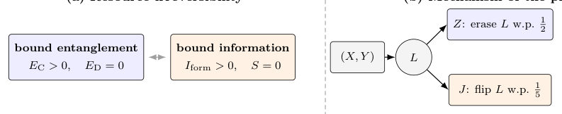
<figcaption class="paper-figure-caption"><b>Fig 1.</b> FIG. 1. Resource analogy and proof mechanism. (a) Bound entanglement and bound information express the same operational irreversibility: positive creation cost (entanglement cost EC, formation cost Iform) with zero distillable yield (distillable entanglement ED, secret-key rate S). (b) In our source (Table I), a latent bit L is correlated with (X, Y ) through Eq. (5) and passed through two noisy channels. Eve’s observation Z reveals L half of the time and is blank otherwise. The variable J, held by nobody, is L flipped with probability 1/5. Given J, the variables X and Y are independent, so an eavesdropper holding J would preclude any key. Because 1</figcaption>
</figure>
<figure class="paper-figure-card">
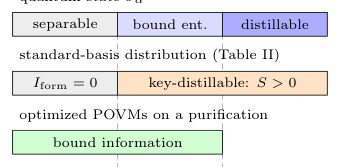
<figcaption class="paper-figure-caption"><b>Fig 2.</b> FIG. 2. One state family, two classicalizations. Top: the qutrit states σα = 2 7 ΠΦ + α</figcaption>
</figure>
</div>

<p><strong>Summary.</strong> The paper proves the existence of 'bound information,' which is the classical counterpart to bound entanglement. It demonstrates that certain shared classical correlations cost resources to create but yield no extractable secret key. This finding establishes a resource analogy, showing that such phenomena are not exclusive to quantum mechanics.</p>
<p><strong>Why it may be interesting.</strong> This work extends the concept of resource theory beyond pure quantum entanglement into classical correlations, providing a rigorous mathematical framework for understanding non-quantum forms of 'hidden' or costly information.</p>
<details>
<summary>Detailed structure</summary>
<p><strong>Main problem.</strong> To determine if a classical analogue of bound entanglement exists: a correlation that costs secret bits to create but from which no secret key can be extracted.</p>
<p><strong>Main result.</strong> The authors prove the existence of such 'bound information' using an explicit source distribution, demonstrating that positive intrinsic information can exist even when the distillable key rate is zero.</p>
<p><strong>Method.</strong> The analysis involves comparing three quantities—secret-key rate ($S$), intrinsic information ($I_{\downarrow}$), and formation cost ($I_{	ext{form}}$)—using techniques from information theory applied to tripartite source distributions.</p>
<p><strong>Model / system.</strong> The problem is modeled using a tripartite source distribution over finite alphabets, specifically involving two bits and one trit. The analysis draws analogies between quantum bound entanglement (qutrits) and classical correlations.</p>
<p><strong>Key observables.</strong> Secret-key rate $S(X; Y \parallel Z)$, Intrinsic Information $I(X; Y \downarrow Z)$, Formation Cost $I_{	ext{form}}(X; Y | Z)$.</p>
<p><strong>Important parameters / regimes.</strong> The analysis uses parameters $\alpha$ governing a family of qutrit states, and the source is defined over finite alphabets (e.g., two bits and one trit).</p>
<p><strong>Assumptions / limitations.</strong> The analogy established holds at the level of resources, not necessarily for individual quantum states or their measurement outcomes.</p>
<p><strong>Figures summary.</strong> Figure 1 illustrates the resource analogy ($   ext{EC} &gt; 0,    ext{ED} = 0$ vs. $I_{	ext{form}} > 0, S = 0$). Figure 2 shows a family of qutrit states $\sigma_\alpha$ illustrating different entanglement regimes.</p>
<p><strong>Paper structure.</strong> The paper develops the analogy by first establishing the classical bound information using an explicit source (Table I). It then analyzes this phenomenon in relation to quantum systems, examining specific families of qutrit states ($\sigma_\alpha$) and proving that measurements on these states can yield positive intrinsic information despite zero distillable key.</p>
</details>
<details>
<summary>Abstract</summary>
<p>Bound entanglement is an extreme irreversibility of quantum theory: certain states cost entanglement to create, yet no singlet can be distilled from them. Twenty-five years ago, Gisin and Wolf asked whether classical cryptography admits the same phenomenon. Are there correlations, shared by two parties and an eavesdropper, that cost secret bits to create although none can be extracted? We show that such bound information exists and give an explicit example, a distribution of two bits and a trit. The proof exploits a gap between two ways of comparing eavesdroppers: one can be better informed than another in every mutual-information comparison and nevertheless unable to simulate the other's data. We further prove that the distributions which motivated the conjecture, standard-basis measurements of bound-entangled qutrit states, are not themselves examples: a secret key is extractable from them whenever their creation costs any secrecy. Other measurements of their purifications, in contrast, do yield bound information, even for the separable states among them. The analogy is thus one of resources, not of individual states and their measurement outcomes.</p>
</details>
<p><sub><a href="#top">↑ back to top</a></sub></p>

<p><a id="paper-2607.25128"></a></p>
<h3 id="field-induced-dissociation-reveals-excitonic-long-range-photocarrier-transport-in-bulk-insulating-bi2se3-nanoribbons"><a href="http://arxiv.org/abs/2607.25128v1">Field-Induced Dissociation Reveals Excitonic Long-Range Photocarrier Transport in Bulk-Insulating Bi2Se3 Nanoribbons</a></h3>
<p><strong>Authors:</strong> Rodrigo Becerra Silva, Xiang Yi, Ziyi Song, Dong Yu<br>
<strong>Type:</strong> both · <strong>Category:</strong> strongly correlated electrons · <strong>PDF:</strong> <a href="https://arxiv.org/pdf/2607.25128v1">https://arxiv.org/pdf/2607.25128v1</a><br>
<strong>Analysis basis:</strong> full PDF text, analyzed in chunks
<strong>Topic relevance:</strong> <code>non-equilibrium dynamics</code> <strong>2/5</strong> · <code>analog quantum simulation</code> <strong>1/5</strong> · <code>correlated / nonlocal dissipation</code> <strong>1/5</strong> · <code>driven-dissipative phase transition</code> <strong>1/5</strong> · <code>methods for driven-dissipative</code> <strong>1/5</strong> · <code>non-equilibrium universality</code> <strong>1/5</strong></p>
<div class="figure-strip-hint">↔ Scroll figures horizontally</div>
<div class="paper-figures-scroll">
<figure class="paper-figure-card">
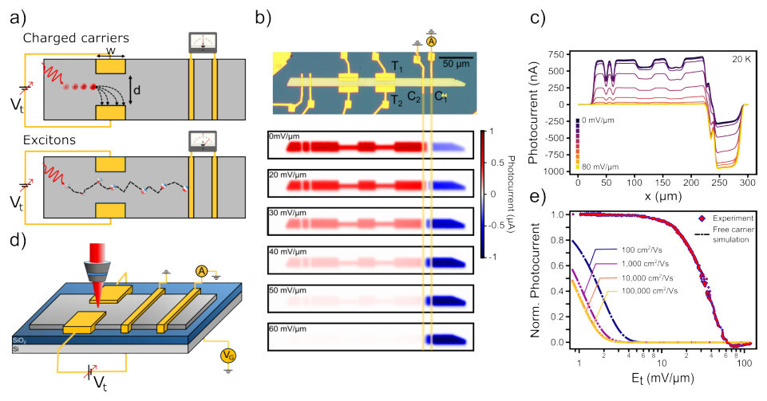
<figcaption class="paper-figure-caption"><b>Fig 1.</b> Figure 1: Transverse field dependent photocurrent in device D1 at 20 K. (a) Schematic of the device geometry with a pair of transverse contacts separated by a distance d. Charged photoexcited carriers are deflected by the transverse electric field, whereas excitons can transit through. (b) Optical image of the device together with SPCM maps acquired at different transverse electric-field strengths using a 5.3 µW laser at 690 nm. All maps are plotted using the same color scale. (c) Line cuts along the nanoribbon axis extracted from the center of the SPCM maps shown in (b), showing the evolution of the photocurrent profile with applied transverse field. (d) Schematic of the SPCM setup. (e)...</figcaption>
</figure>
<figure class="paper-figure-card">
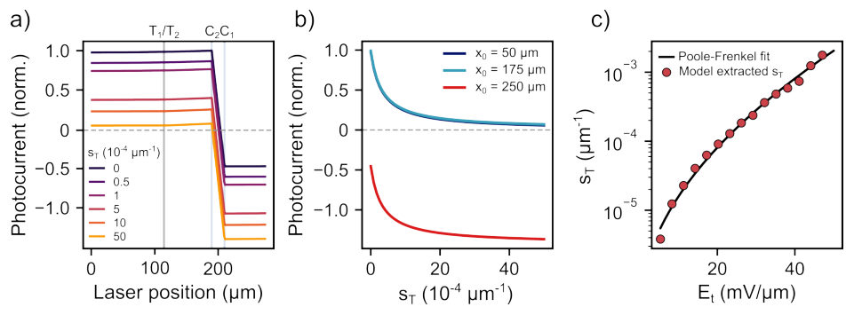
<figcaption class="paper-figure-caption"><b>Fig 2.</b> Figure 2: Simulation results of the multiple-pass exciton diffusion model. (a) Simulated photocurrent profiles as a function of laser position for increasing transverse sink strength sT. (b) Photocurrent as a function of sT at representative laser positions. (c) Sink strength sT extracted from the measured field-dependent photocurrent suppression, plotted against the transverse field Et. The solid line is a Poole-Frenkel fit using Eq. (4).</figcaption>
</figure>
<figure class="paper-figure-card">
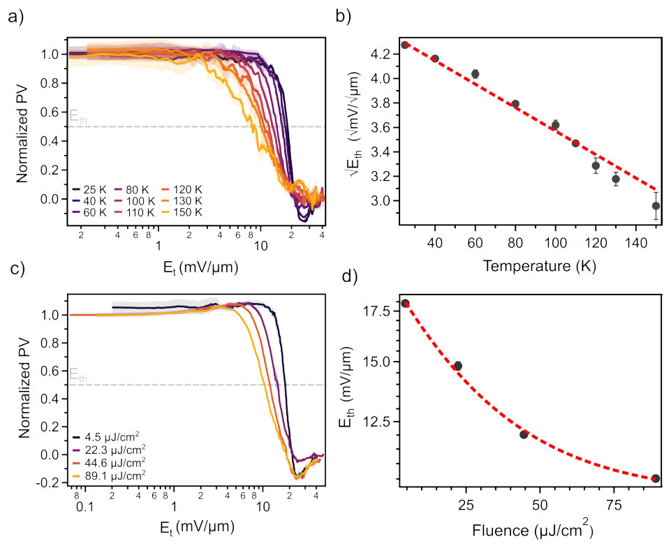
<figcaption class="paper-figure-caption"><b>Fig 3.</b> Figure 3: Temperature- and fluence-dependent threshold field in device D2. (a) Normalized photovoltage (PV) versus transverse field Et for temperatures from 25 to 150 K, with the laser parked at the center of the transverse channel at a fluence of 4.8 µJ/cm2. The threshold field Eth is defined as the 50% crossing of the normalized PV (gray dashed line). Shaded bands denote the measurement uncertainty. (b) Eth extracted from (a) versus temperature, showing that p</figcaption>
</figure>
<figure class="paper-figure-card">
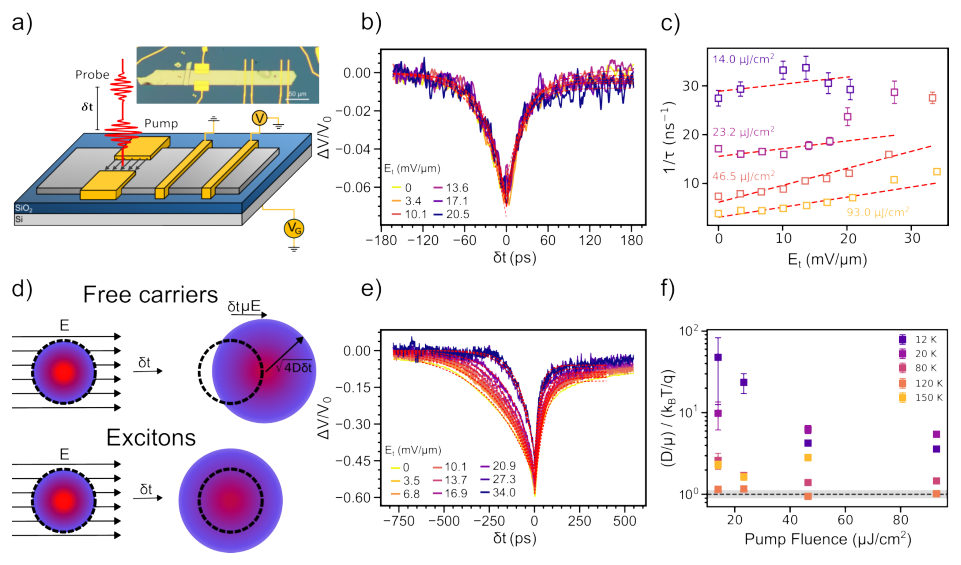
<figcaption class="paper-figure-caption"><b>Fig 4.</b> Figure 4: Ultrafast transient photovoltage measurements under transverse field in device D2. (a) TPV setup, where a pulsed laser excites the device while a transverse electric field is applied across the channel. Inset: microscopic image of the device. (b,e) Normalized modulation of photovoltage versus delay measured at 14 and 93 µJ/cm2 respectively, under various field strengths at 12 K. Positive (negative) delay means pump arrives later (earlier) than probe. (c) The inverse of recovery times as a function of electric field for various excitation fluences at 12 K. The dashed curves show fits used to determine the diffusivity and mobility using Eq. (5). (d) Schematics showing the spreading...</figcaption>
</figure>
</div>

<p><strong>Summary.</strong> The paper investigates the mechanism behind long-range photocarrier transport in topological insulator nanoribbons by comparing measurements under an external electric field against free-carrier theory. By observing that the required field to suppress photocurrent far exceeds theoretical limits for free charges, and by showing diffusivity violations in time-domain measurements, the authors conclude that excitons—a charge-neutral correlated state—are responsible for the observed transport.</p>
<p><strong>Why it may be interesting.</strong> This work provides a clear experimental distinction between single-particle transport and collective, correlated excitations (excitons) using field-dependent optical probes, which is highly relevant for understanding strongly interacting quantum matter systems.</p>
<details>
<summary>Detailed structure</summary>
<p><strong>Main problem.</strong> The study aims to determine the physical mechanism responsible for anomalously long-range photocarrier transport observed in topological insulators at cryogenic temperatures.</p>
<p><strong>Main result.</strong> The evidence strongly indicates that this long-range photoresponse is not carried by free charge carriers but rather by a charge-neutral correlated state, such as an exciton condensate.</p>
<p><strong>Method.</strong> The researchers combined Scanning Photocurrent Microscopy (SPCM) and ultrafast Transient Photovoltage (TPV) measurements, using the application of a transverse electric field as a discriminating probe.</p>
<p><strong>Model / system.</strong> The physical system is bulk-insulating Sb-doped Bi2Se3 nanoribbons. The analysis compares experimental results against theoretical models for both free charge carrier diffusion/drift and exciton dissociation dynamics (Poole-Frenkel type).</p>
<p><strong>Key observables.</strong> Photocurrent suppression threshold field ($E_{th}$), photocarrier diffusivity, and the ratio $(D/\mu)/(k_B T/q)$ derived from TPV measurements.</p>
<p><strong>Important parameters / regimes.</strong> Cryogenic temperatures (e.g., 12 K), transverse electric fields ($\sim 33 	ext{ mV}/\mu	ext{m}$ vs $\sim 0.7 	ext{ mV}/\mu	ext{m}$ benchmark), and excitation fluence.</p>
<p><strong>Assumptions / limitations.</strong> The analysis assumes the transverse field acts as a discriminator between charged (deflected) and neutral (undeformed) carriers, and that the exciton dissociation follows a Poole-Frenkel type relationship.</p>
<p><strong>Figures summary.</strong> Figures illustrate SPCM maps showing field dependence of photocurrent suppression, comparisons to free carrier simulations, and TPV analysis plots detailing photovoltage decay and diffusivity ratios.</p>
<p><strong>Paper structure.</strong> The paper progresses by first establishing the anomalous transport using SPCM (field dependence), then providing independent confirmation via TPV measurements (diffusivity violation), and finally synthesizing these results across temperature and fluence dependencies to rule out free carriers in favor of excitons.</p>
</details>
<details>
<summary>Abstract</summary>
<p>Photoexcited charge carriers in topological insulators display anomalously long-range transport at cryogenic temperatures, but the underlying mechanism remains under debate. Here we use a transverse electric field as a discriminating probe of photocarrier dynamics in bulk-insulating Sb-doped Bi2Se3 nanoribbons, combining scanning photocurrent microscopy (SPCM) with ultrafast transient photovoltage (TPV) measurements. SPCM shows that suppression of the photocurrent requires a transverse electric field nearly 50 times larger than that needed to deflect free carriers, yet comparable to the expected exciton dissociation field. TPV measurements at 12 K and low excitation fluence reveal that the photocarrier diffusivity exceeds the value implied by the Einstein relation and the measured drift mobility by more than an order of magnitude, a bound that holds even at the lower end of the fitting uncertainty. Together, these observations indicate that the long-range photoresponse is not carried by free charge carriers but by a charge-neutral correlated state.</p>
</details>
<p><sub><a href="#top">↑ back to top</a></sub></p>

<p><a id="paper-2607.25660"></a></p>
<h3 id="aharonov-casher-phase-in-twisted-bilayer-graphene"><a href="http://arxiv.org/abs/2607.25660v1">Aharonov-Casher phase in twisted bilayer graphene</a></h3>
<p><strong>Authors:</strong> Igor Kuzmenko, Y. B. Band, Yshai Avishai<br>
<strong>Type:</strong> theory · <strong>Category:</strong> strongly correlated electrons · <strong>PDF:</strong> <a href="https://arxiv.org/pdf/2607.25660v1">https://arxiv.org/pdf/2607.25660v1</a><br>
<strong>Analysis basis:</strong> full PDF text, analyzed in chunks
<strong>Topic relevance:</strong> <code>analog quantum simulation</code> <strong>2/5</strong> · <code>spintronics-quantum-optics interface</code> <strong>2/5</strong> · <code>Keldysh / 2PI / non-Gaussian methods</code> <strong>1/5</strong> · <code>Kondo &amp; dissipative impurity</code> <strong>1/5</strong></p>
<div class="figure-strip-hint">↔ Scroll figures horizontally</div>
<div class="paper-figures-scroll">
<figure class="paper-figure-card">
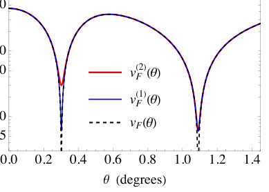
<figcaption class="paper-figure-caption"><b>Fig 1.</b> FIG. 1. Renormalized Fermi velocity vF (θ) versus θ using the TKV model [19] (dased black curve), which vanishes at the magic angles, θ1 and θ2. The solid blue and red curves show vF (θ) which remain finite at θ1 and θ2, as in Ref. [20] (which considers only the first magic angle). The blue curve has the same Fermi velocity at θ1 and θ2, vF (θ1) = vF (θ2) = 0.006 v0, and the red curve has vF (θ1) = 0.006 v0, and vF (θ2) = 0.03 v0.</figcaption>
</figure>
<figure class="paper-figure-card">
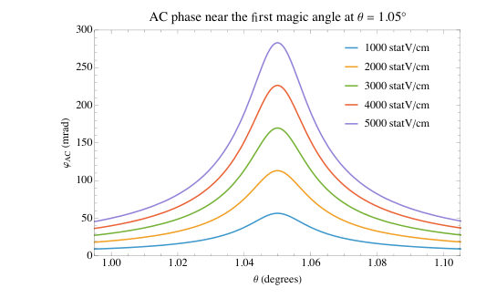
<figcaption class="paper-figure-caption"><b>Fig 2.</b> FIG. 2. AC phase ϕAC(θ) near the first magic angle θ ≈1.05◦</figcaption>
</figure>
<figure class="paper-figure-card">
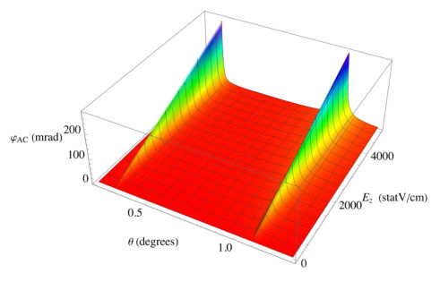
<figcaption class="paper-figure-caption"><b>Fig 3.</b> FIG. 3. AC phase near the first two magic angles θ ≈1.08◦, 0.3◦</figcaption>
</figure>
<figure class="paper-figure-card">
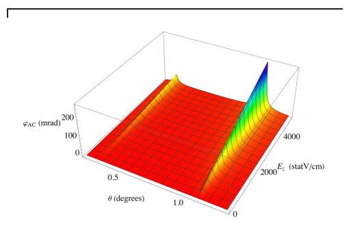
<figcaption class="paper-figure-caption"><b>Fig 4.</b> FIG. 4. AC phase near the first two magic angles θ ≈1.08◦, 0.3◦, as in Fig. 3, but with the minimal Fermi velocity at the second magic angle taken to be five times larger than the value at the first magic angle.</figcaption>
</figure>
</div>

<p><strong>Summary.</strong> This theoretical work analyzes the Aharonov-Casher phase experienced by electrons in twisted bilayer graphene under an external electric field. The authors find that this quantum phase exhibits sharp peaks precisely at the material's magic angles. This provides a novel, measurable signature to probe the topological properties and electronic structure of correlated 2D materials.</p>
<p><strong>Why it may be interesting.</strong> The connection between topological phases (Berry curvature/AC phase) and electronic structure features like flat bands at magic angles provides a powerful diagnostic tool for characterizing correlated electron systems in 2D materials.</p>
<details>
<summary>Detailed structure</summary>
<p><strong>Main problem.</strong> The study investigates the Aharonov-Casher (AC) phase acquired by an electron in twisted bilayer graphene (TBG) when subjected to a perpendicular electric field.</p>
<p><strong>Main result.</strong> The AC phase is predicted to be linear with the applied electric field and exhibits sharp peaks precisely at the magic angles, where the renormalized Fermi velocity vanishes or changes significantly.</p>
<p><strong>Method.</strong> The analysis involves deriving an effective low-energy Hamiltonian using perturbation theory in the moiré potential and calculating the resulting gauge-dependent AC phase factor via a gauge transformation.</p>
<p><strong>Model / system.</strong> The system is Twisted Bilayer Graphene (TBG) lying in the x-y plane, modeled by incorporating kinetic energy, a Moiré potential, and Rashba spin-orbit coupling. The low-energy physics is described by an effective Hamiltonian involving Dirac fermions.</p>
<p><strong>Key observables.</strong> Aharonov-Casher phase ($\phi_{AC}$), which is measured via the probability $P(	heta)$ of tunneling into a polarized tip.</p>
<p><strong>Important parameters / regimes.</strong> The perpendicular electric field ($E$), the twist angle ($  heta$), and the renormalized Fermi velocity $   ilde{v}_F(  heta)$.</p>
<p><strong>Assumptions / limitations.</strong> The analysis assumes small twist angles ($   heta \ll 1$ rad) and relies on approximations derived from perturbation theory in the moiré potential.</p>
<p><strong>Figures summary.</strong> Figures illustrate the dependence of the renormalized Fermi velocity $v_F(	heta)$ on $  heta$, showing vanishing points at magic angles, and plot the AC phase $\phi_{AC}(	heta)$ versus $ heta$ and $E$.</p>
<p><strong>Paper structure.</strong> The paper builds from defining the physical system (TBG with perpendicular E-field) to deriving the low-energy effective Hamiltonian incorporating spin-orbit coupling. It then calculates the resulting gauge potential, leading to the prediction of the AC phase dependence on $    heta$ and $E$.</p>
</details>
<details>
<summary>Abstract</summary>
<p>The Aharonov-Casher (AC) effect is a quantum mechanical phenomenon in which the wave function of a particle with a magnetic moment moving in a region subject to an electric field develops a phase shift due to spin-orbit interaction, even if no classical force acts on it. This phase also depends on the medium through which the particle moves. Here we focus on the AC phase of an electron moving in twisted bilayer graphene (TBG) lying in the $x$-$y$ plane, subject to a uniform electric field perpendicular to the plane of the graphene, ${\bf E}=E{\hat{\bf z}}$. The AC phase is determined by an $SU(2)$ vector potential ${\bf A}$ from which a phase factor is generated, and used to perform a gauge transformation of the Hamiltonian. We find that the AC phase is linear with $E$ and exhibits sharp peaks at the magic angles.</p>
</details>
<p><sub><a href="#top">↑ back to top</a></sub></p>

<p><a id="paper-2607.24975"></a></p>
<h3 id="strongly-connected-percolation-on-directed-lattices"><a href="http://arxiv.org/abs/2607.24975v1">Strongly-connected percolation on directed lattices</a></h3>
<p><strong>Authors:</strong> M. E. J. Newman, P. Grassberger, R. M. Ziff<br>
<strong>Type:</strong> theory · <strong>Category:</strong> statistical mechanics · <strong>PDF:</strong> <a href="https://arxiv.org/pdf/2607.24975v1">https://arxiv.org/pdf/2607.24975v1</a><br>
<strong>Analysis basis:</strong> full PDF text, analyzed in chunks
<strong>Topic relevance:</strong> <code>non-equilibrium universality</code> <strong>2/5</strong> · <code>analog quantum simulation</code> <strong>1/5</strong> · <code>driven-dissipative phase transition</code> <strong>1/5</strong> · <code>methods for driven-dissipative</code> <strong>1/5</strong> · <code>non-equilibrium dynamics</code> <strong>1/5</strong></p>
<div class="figure-strip-hint">↔ Scroll figures horizontally</div>
<div class="paper-figures-scroll">
<figure class="paper-figure-card">
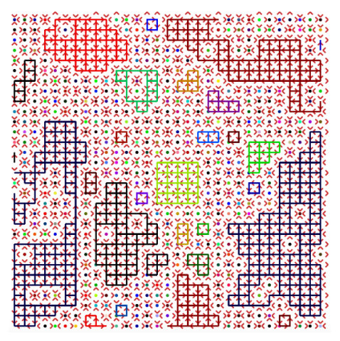
<figcaption class="paper-figure-caption"><b>Fig 1.</b> FIG. 2: Strongly-connected clusters for the random diode model on the square lattice at the percolation threshold pc = 1. Isolated sites are components of size 1.</figcaption>
</figure>
<figure class="paper-figure-card">
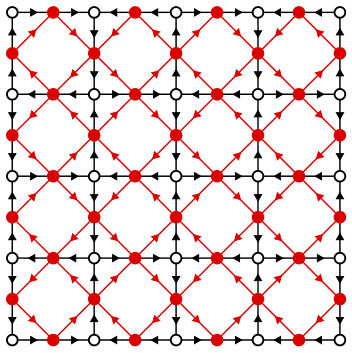
<figcaption class="paper-figure-caption"><b>Fig 2.</b> FIG. 4: Mapping from the L-lattice to the Manhattan lattice. Bond percolation on the L-lattice (open circles, black) maps state-for-state onto site percolation on a Manhattan lattice at 45◦to the original (solid circles, red).</figcaption>
</figure>
<figure class="paper-figure-card">
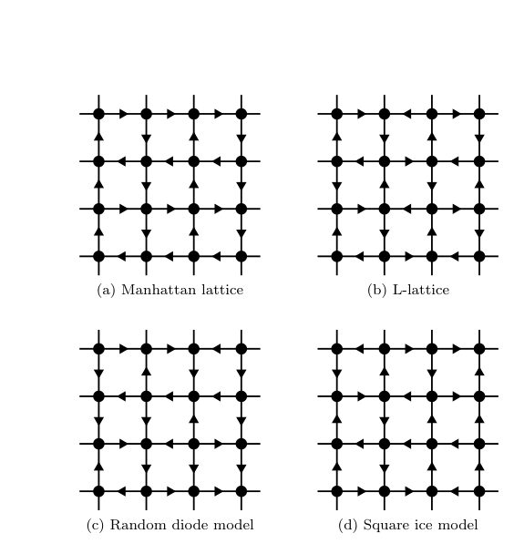
<figcaption class="paper-figure-caption"><b>Fig 3.</b> FIG. 3: The four directed lattices that we study in this paper.</figcaption>
</figure>
<figure class="paper-figure-card">
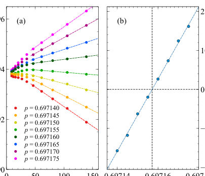
<figcaption class="paper-figure-caption"><b>Fig 4.</b> FIG. 5: (a) The cumulative distribution of out-component sizes P(s) on the Manhattan lattice, plotted as sτ−2P(s) against sσ as described in the text. Dashed lines are straight- line fits to the rightmost five points in each case. (b) Slopes of the fits from panel (a) as a function of p. The intercept where the slope crosses zero (vertical dashed line) is the best estimate of the position of the percolation threshold and gives pc = 0.6971571(5).</figcaption>
</figure>
<figure class="paper-figure-card">
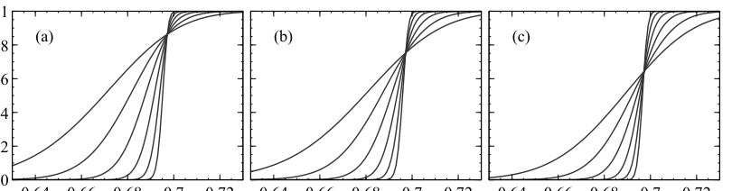
<figcaption class="paper-figure-caption"><b>Fig 5.</b> FIG. 6: The probability RL(p) of a strongly-connected cluster wrapping around the periodic boundary conditions on L × L Manhattan lattices with L = 32, 64, 128, 256, 512, and 1024 for each of three definitions of wrapping: (a) wrapping in either direction, horizontally or vertically, (b) wrapping in one particular direction (e.g., horizontally), and (c) wrapping in both directions.</figcaption>
</figure>
</div>

<p><strong>Summary.</strong> This paper analyzes strongly-connected percolation on directed lattices, determining that its critical behavior belongs to a unique universality class different from standard undirected percolation. Using advanced simulation techniques and graph algorithms, the authors compare various bond arrangements and establish formal equivalences between different lattice models. The work is significant for understanding connectivity thresholds in anisotropic or directional physical systems.</p>
<p><strong>Why it may be interesting.</strong> While focused on classical percolation, the rigorous mathematical analysis of connectivity thresholds and universality classes provides foundational tools applicable to understanding phase transitions in complex quantum systems or network reliability studies.</p>
<details>
<summary>Detailed structure</summary>
<p><strong>Main problem.</strong> The study investigates percolation on lattices with directed bonds, specifically focusing on the properties of strongly-connected clusters.</p>
<p><strong>Main result.</strong> Strongly-connected percolation exhibits critical behavior in a universality class distinct from traditional undirected percolation, although all tested bond arrangements fall into the same universality class.</p>
<p><strong>Method.</strong> The authors employed extensive numerical simulations and developed advanced graph algorithms (like Tarjan's) to calculate high-precision values for critical exponents and thresholds.</p>
<p><strong>Model / system.</strong> The model is bond percolation on two-dimensional square lattices with directed bonds, including specific arrangements like the Manhattan lattice, L-lattice, random diode, and square ice models.</p>
<p><strong>Key observables.</strong> Percolation thresholds ($p_c$), critical exponents, fractal dimensions, crossing probabilities, and the hull dimension ($d_h$).</p>
<p><strong>Important parameters / regimes.</strong> Bond occupation probability ($p$) and lattice size ($L$).</p>
<p><strong>Assumptions / limitations.</strong> The study focuses on cases where bonds point in a single direction, excluding bidirectional (resistor-diode) configurations.</p>
<p><strong>Figures summary.</strong> Figures illustrate strongly-connected clusters for various models; one figure maps bond percolation on the L-lattice to site percolation on a Manhattan lattice at 45 degrees.</p>
<p><strong>Paper structure.</strong> The paper analyzes the definition of strong connectivity, details algorithmic approaches (Tarjan's algorithm) for cluster detection, presents results comparing critical exponents across different directed lattices, and discusses formal mappings between models.</p>
</details>
<details>
<summary>Abstract</summary>
<p>We study percolation on lattices with directed bonds, focusing on the behavior of strongly-connected percolation clusters -- clusters in which every site is reachable from every other along a directed path. We consider the two-dimensional square lattice and various globally isotropic arrangements of the directions of the bonds. Performing simulations using a range of algorithmic approaches, we calculate high-precision values for critical exponents, fractal dimensions, crossing probabilities, and percolation thresholds for bond percolation with each bond arrangement. We find that the critical behavior is in a distinctly different universality class from that of traditional undirected percolation, but that all bond arrangements appear to fall in the same universality class.</p>
</details>
<p><sub><a href="#top">↑ back to top</a></sub></p>

<p><a id="paper-2607.25358"></a></p>
<h3 id="qcoem-quantum-cloud-orchestration-with-evolutionary-multi-objective-optimization"><a href="http://arxiv.org/abs/2607.25358v1">QCOEM: Quantum Cloud Orchestration with Evolutionary Multi-Objective Optimization</a></h3>
<p><strong>Authors:</strong> Tam N. Pham, Hoa T. Nguyen, Quan Le-Trung<br>
<strong>Type:</strong> experiment · <strong>Category:</strong> quantum information and computing · <strong>PDF:</strong> <a href="https://arxiv.org/pdf/2607.25358v1">https://arxiv.org/pdf/2607.25358v1</a><br>
<strong>Analysis basis:</strong> full PDF text, analyzed in chunks
<strong>Topic relevance:</strong> <code>QC/QI experiment</code> <strong>2/5</strong> · <code>entanglement &amp; information structure</code> <strong>1/5</strong> · <code>methods for driven-dissipative</code> <strong>1/5</strong> · <code>non-equilibrium dynamics</code> <strong>1/5</strong></p>
<div class="figure-strip-hint">↔ Scroll figures horizontally</div>
<div class="paper-figures-scroll">
<figure class="paper-figure-card">
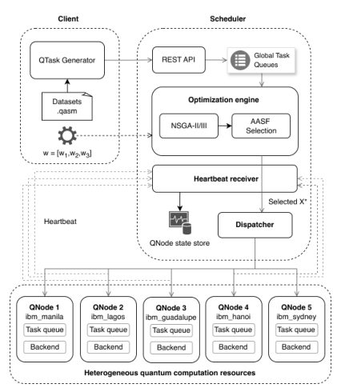
<figcaption class="paper-figure-caption"><b>Fig 1.</b> Fig. 1. System overview of the proposed QCOEM framework. Periodic QNode heartbeats asynchronously update the scheduler’s cached state; each orchestration round uses this state to compute a batch assignment, which is then dispatched to QNodes for FIFO execution.</figcaption>
</figure>
</div>

<p><strong>Summary.</strong> This paper introduces QCOEM, a framework that uses multi-objective evolutionary optimization to schedule quantum tasks across noisy, heterogeneous cloud hardware. By jointly optimizing mean completion time, error rate, and load balance, it significantly outperforms simple heuristics. This work provides a crucial tool for achieving stable, high-fidelity execution in practical quantum cloud computing settings.</p>
<p><strong>Why it may be interesting.</strong> While focused on cloud orchestration rather than fundamental physics, the core challenge involves optimizing complex resource allocation under realistic noise constraints, which has implications for designing robust quantum control protocols or understanding system-level decoherence effects in large arrays of qubits.</p>
<details>
<summary>Detailed structure</summary>
<p><strong>Main problem.</strong> Dynamically orchestrating quantum workloads across heterogeneous cloud backends while managing time-varying noise profiles, qubit topologies, and queue congestion.</p>
<p><strong>Main result.</strong> The QCOEM framework achieves about 30% higher mean fidelity than noise-agnostic heuristics and eliminates task rescheduling in a simulated environment.</p>
<p><strong>Method.</strong> It formulates the problem as a Multi-Objective Optimization Problem (MOOP) solved using NSGA-II/III, followed by preference selection via an Augmented Achievement Scalarization Function (AASF).</p>
<p><strong>Model / system.</strong> The system models a heterogeneous quantum cloud environment composed of multiple Noisy Intermediate-Scale Quantum (NISQ) era Quantum Processing Units (QPUs), managed via a centralized scheduler.</p>
<p><strong>Key observables.</strong> Mean Task Completion Time, Mean Error Rate (Fidelity), Load Imbalance (standard deviation of completion times), and Scheduling Overhead.</p>
<p><strong>Important parameters / regimes.</strong> Calibrated hardware snapshots (error rates, coupling maps), user priority weights ($w$), and batch sizes ($M$).</p>
<p><strong>Assumptions / limitations.</strong> The problem is NP-hard, necessitating heuristic approximation via MOEAs; it assumes stable hardware snapshots and FIFO queueing on QNodes.</p>
<p><strong>Figures summary.</strong> Figures compare performance across different optimization objectives (Load-Focus vs. Quality-Focus) against baseline heuristics, illustrating trade-offs between time efficiency, fidelity, and task distribution.</p>
<p><strong>Paper structure.</strong> The paper introduces the QCOEM framework architecture, details the MOOP formulation with three objectives, presents the use of NSGA-II/III for Pareto front approximation, and concludes with extensive performance evaluation comparing its results against classical scheduling methods.</p>
</details>
<details>
<summary>Abstract</summary>
<p>Quantum cloud platforms need to dynamically orchestrate workloads across heterogeneous quantum computation backends whose noise profiles, qubit topologies, and queues vary over time. Existing orchestrators use noise-agnostic heuristics that ignore backend-specific errors, causing reduced execution fidelity, load imbalance, and frequent rescheduling. To address these challenges, we propose QCOEM - a Quantum Cloud Orchestration framework that leverages Evolutionary algorithms for Multi-objective optimization of quantum task scheduling. We compare NSGA-II and NSGA-III for jointly minimizing mean completion time, execution error rate, and load imbalance. To select schedules from a non-convex Pareto front, we apply an Augmented Achievement Scalarization Function (AASF) as a preference-based decision rule that maps the Pareto set to a single dispatchable schedule aligned with user priorities. Our extensive performance evaluation in a heterogeneous quantum cloud environment shows zero task rescheduling and about 30% higher mean fidelity than noise-agnostic heuristics, while maintaining bounded scheduling overhead. The experiment results indicate that our QCOEM framework can deliver stable, high-fidelity execution and lightweight resource management for quantum cloud computing.</p>
</details>
<p><sub><a href="#top">↑ back to top</a></sub></p>

<p><a id="paper-2607.24907"></a></p>
<h3 id="fault-tolerant-distributed-quantum-computing-with-a-single-nucleus-per-node"><a href="http://arxiv.org/abs/2607.24907v1">Fault-tolerant distributed quantum computing with a single nucleus per node</a></h3>
<p><strong>Authors:</strong> Yotam Vaknin, Shoham Jaocby, Roi Nevo, Aleksander Kubica, Alex Retzker<br>
<strong>Type:</strong> theory · <strong>Category:</strong> quantum information and computing · <strong>PDF:</strong> <a href="https://arxiv.org/pdf/2607.24907v1">https://arxiv.org/pdf/2607.24907v1</a><br>
<strong>Analysis basis:</strong> full PDF text, analyzed in chunks
<strong>Topic relevance:</strong> <code>QC/QI experiment</code> <strong>2/5</strong> · <code>quantum measurements</code> <strong>1/5</strong> · <code>spintronics-quantum-optics interface</code> <strong>1/5</strong></p>
<div class="figure-strip-hint">↔ Scroll figures horizontally</div>
<div class="paper-figures-scroll">
<figure class="paper-figure-card">
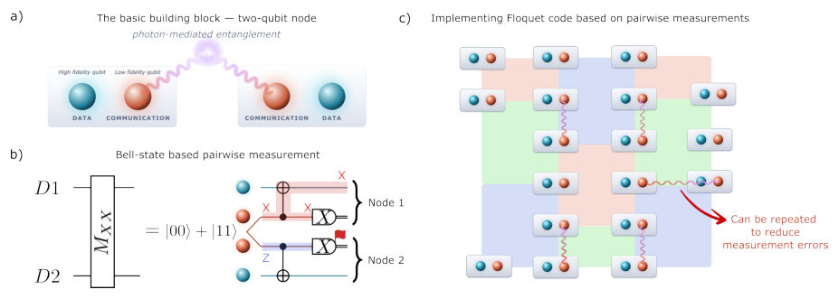
<figcaption class="paper-figure-caption"><b>Fig 1.</b> FIG. 1. Using only one high fidelity qubit and one low fidelity qubit per node we can implement Floquet QEC protocols. a) The high fidelity qubit is used as the data qubit and the low fidelity qubit mediates interaction through optically generated entanglement. b) Using a Bell pair, one can implement non-local pairwise measure- ment on the data qubits. The large phase noise on the Bell pairs flip the measurement result, while the lower rate bit-flip noise propagates to the data qubits. c) By connecting multiple nodes through optical links, one can implement any dynamical code that is based on pairwise measurement. In this figure, we present the honeycomb code. The red, green and blue...</figcaption>
</figure>
<figure class="paper-figure-card">
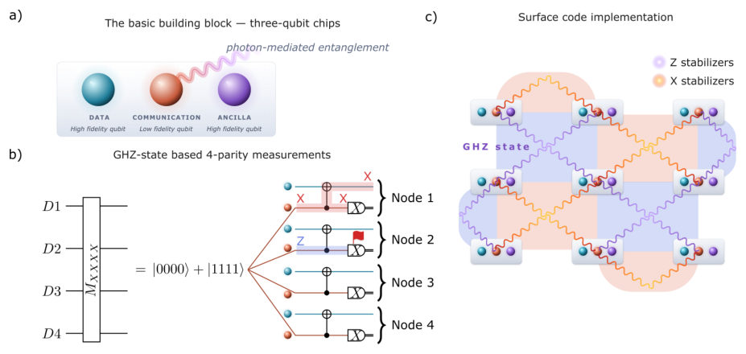
<figcaption class="paper-figure-caption"><b>Fig 2.</b> FIG. 2. Adding a single high fidelity ancilla qubit per node enables the implementation of general stabilizer codes. a) Each node consists of a high fidelity data qubit, a low fidelity communication qubit that mediates interaction through optically generated entanglement, and a high fidelity ancilla qubit used for merging Bell pairs into GHZ states. b) Using a GHZ state distributed across four nodes, one can implement a non-local weight-four parity measurement on the data qubits. As in the two-body case, the dominant phase noise (Z) on the GHZ state only flips the measurement result, while the lower rate bit-flip noise (X) propagates to the data qubits. c) By connecting multiple nodes...</figcaption>
</figure>
<figure class="paper-figure-card">
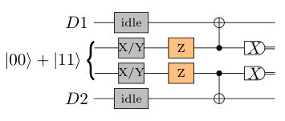
<figcaption class="paper-figure-caption"><b>Fig 3.</b> FIG. 3. Noise model for the Bell pair-based two-body Pauli measurement, shown for a X1X2 measurement. A Bell pair of the two communication qubits is coupled to the data qubits by CX gates and the communication qubits are read out in the X ba- sis, yielding the joint X1X2 parity. Gray boxes are pres-scale errors: the X/Y dephasing of the Bell pair, data-qubit idling, and measurement errors. The or- ange Z is approximately pz/2 probability phase error on each communication qubit, originating from photon indistinguishability and lower coherence of the com- munication qubit. We set this value such that the phase-error per Bell pair is exactly pz. The symmet- ric noise on the two qubits...</figcaption>
</figure>
<figure class="paper-figure-card">
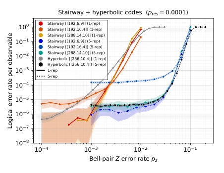
<figcaption class="paper-figure-caption"><b>Fig 4.</b> FIG. 5. Logical error rates per d rounds of the Stair- way code family for 1-repetition (warm colors) and 5- repetition (cold colors) protocols. For comparison, we also plot the error rates of the [[256, 10, 4]] hyperbolic code under the 1-repetition (grey) and 5-repetition (black) protocols.</figcaption>
</figure>
<figure class="paper-figure-card">
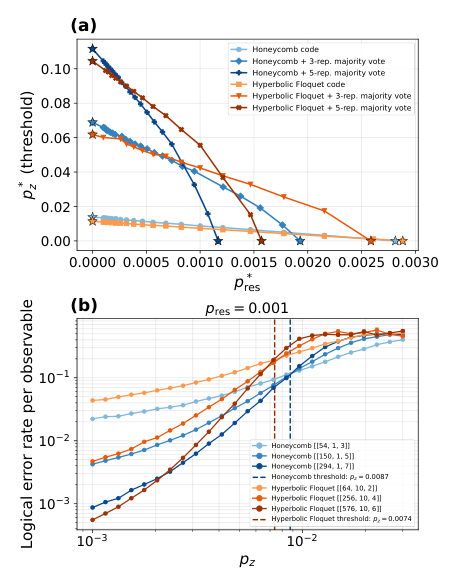
<figcaption class="paper-figure-caption"><b>Fig 5.</b> FIG. 4. Threshold performance of the Honey- comb and hyperbolic Floquet codes under the biased noise model, and the improvement from repeated measurements. (a) Phase-noise thresh- old pz as a function of the residual error rate pres. For both codes, combining three/five repeated pairwise measurements via majority vote substantially raises the pz threshold relative to a single measurement, at the cost of a modest reduction in the tolerable pres. Stars represent the limiting cases of pres = 0 or pz = 0. (b) Logical error rate per observable as a function of pz at fixed pres = 10−3, shown for increasing code distances of the Honeycomb code ([[54, 1, 3]], [[150, 1, 5]], [[294, 1, 7]]) and the...</figcaption>
</figure>
</div>

<p><strong>Summary.</strong> The paper presents a novel approach to fault-tolerant distributed quantum computing that bypasses resource-intensive state distillation. By exploiting an engineered error bias in photonic links—where phase errors are common but bit-flips are rare—the required ancillary qubits per node are drastically reduced. This makes the performance limited by the high-quality local memory rather than the noisy communication channel.</p>
<p><strong>Why it may be interesting.</strong> This work is highly relevant as it provides concrete, resource-efficient protocols for scaling quantum computation across physically separated modules, directly impacting the feasibility of large-scale quantum networks.</p>
<details>
<summary>Detailed structure</summary>
<p><strong>Main problem.</strong> The primary challenge is achieving fault-tolerant distributed quantum computation while minimizing the required number of ancillary qubits per node.</p>
<p><strong>Main result.</strong> By engineering a communication error bias (phase errors dominant), the need for dedicated state distillation can be avoided, significantly reducing resource overhead and relaxing link fidelity requirements.</p>
<p><strong>Method.</strong> The authors design syndrome-extraction circuits that exploit this phase noise bias, allowing simple measurement repetition to suppress errors using the error-correcting code itself rather than complex purification protocols.</p>
<p><strong>Model / system.</strong> The system models distributed quantum nodes interconnected via optical links. Each node utilizes high-fidelity nuclear spins for data qubits and low-coherence electron spins for communication qubits.</p>
<p><strong>Key observables.</strong> Logical error rate, error correction thresholds (e.g., Honeycomb code threshold up to pz ~ 11%), and the required number of ancillary qubits per node.</p>
<p><strong>Important parameters / regimes.</strong> Phase error probability ($p_z$), residual noise strength ($p_{	ext{res}}$), and the ratio between these two error types, which defines the exploitable bias.</p>
<p><strong>Assumptions / limitations.</strong> The analysis assumes that the dominant noise contribution is phase noise affecting generated Bell pairs, allowing it to be treated as a measurement error rather than propagating directly to data qubits.</p>
<p><strong>Figures summary.</strong> Figures illustrate implementing Floquet QEC protocols using minimal ancillary qubits and show how repeating measurements significantly raises the threshold for phase errors in both Honeycomb and Hyperbolic codes compared to single measurements.</p>
<p><strong>Paper structure.</strong> The paper develops theory by first identifying the resource bottleneck (distillation) and proposing a solution based on error bias. It then analyzes performance thresholds using specific codes (Floquet/stabilizer) and discusses stability improvements through measurement repetition, concluding with detailed circuit implementations for state preparation.</p>
</details>
<details>
<summary>Abstract</summary>
<p>Distributed quantum computing interconnects small, high-quality nodes through optical links, but this architecture carries a pronounced asymmetry: in-node gates and measurements are cheap and high-fidelity, whereas inter-node communication relies on a low-coherence communication qubit and faulty photonics. Previous approaches overcame the noisy link by placing several high-quality data qubits in each node and consuming them for Bell pair and GHZ state distillation. Here we show that distillation can be avoided altogether. The key observation is that we can engineer a communication error bias, where photonic Bell pairs suffer frequent phase errors but only rare bit-flip errors. We design the syndrome-extraction circuits so that this phase noise appears solely as a measurement error that does not propagate to the data qubits, and is therefore suppressed by simply repeating the measurement; letting the error-correcting code itself, rather than a dedicated distillation subroutine, to purify the link. This dramatically reduces the need for ancillary nuclei: Floquet codes require only a single data qubit per node, while general stabilizer codes require just one additional ancilla. We demonstrate high error-correction thresholds throughout this regime, and we identify lattice surgery as inherently robust for this setting, enabling logical operations at a threshold close to that of quantum memory. As a result, the performance of the quantum computer is limited by the high-quality data qubits, while the requirements on photon indistinguishability and coherence of the communication qubit are substantially relaxed.</p>
</details>
<p><sub><a href="#top">↑ back to top</a></sub></p>

<p><a id="paper-2607.24908"></a></p>
<h3 id="templat-a-versatile-c-engine-for-lattice-field-theories"><a href="http://arxiv.org/abs/2607.24908v1">TempLat: a versatile C++ engine for lattice field theories</a></h3>
<p><strong>Authors:</strong> Adrien Florio, Franz R. Sattler<br>
<strong>Type:</strong> both · <strong>Category:</strong> numerical methods · <strong>PDF:</strong> <a href="https://arxiv.org/pdf/2607.24908v1">https://arxiv.org/pdf/2607.24908v1</a><br>
<strong>Analysis basis:</strong> full PDF text, analyzed in chunks
<strong>Topic relevance:</strong> <code>analog quantum simulation</code> <strong>2/5</strong> · <code>methods for driven-dissipative</code> <strong>1/5</strong> · <code>non-equilibrium dynamics</code> <strong>1/5</strong></p>
<div class="figure-strip-hint">↔ Scroll figures horizontally</div>
<div class="paper-figures-scroll">
<figure class="paper-figure-card">
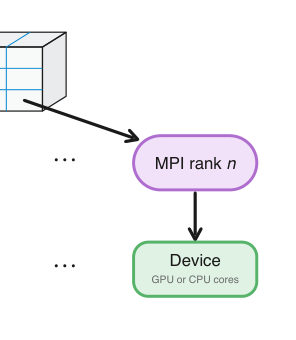
<figcaption class="paper-figure-caption"><b>Fig 1.</b> Figure 1: Hybrid parallelization structure</figcaption>
</figure>
<figure class="paper-figure-card">
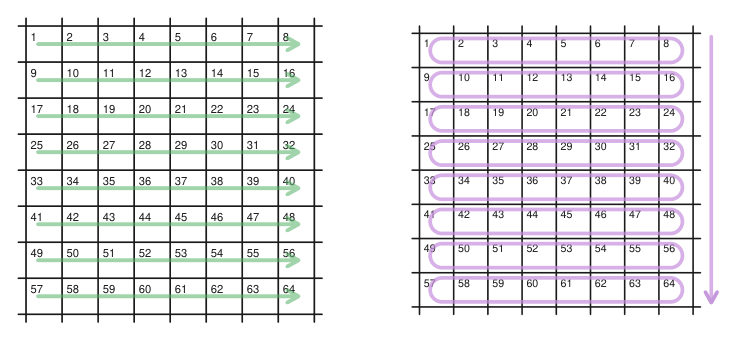
<figcaption class="paper-figure-caption"><b>Fig 2.</b> Figure 2: Left: Cached memory access: each thread gets a block of memory it walks through, allowing it to both cache the memory and enable SIMD. Right: Coalesced memory access, where a warp of threads walks through the memory. Each thread in the warp thus has a fixed stride when iterating. For illustration we show warp sizes of 8, but NVIDIA hardware typically has warp sizes of 32, while AMD wavefronts are 32 or 64 wide.</figcaption>
</figure>
<figure class="paper-figure-card">
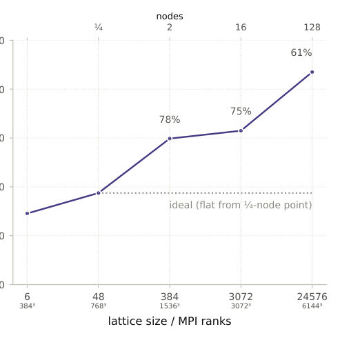
<figcaption class="paper-figure-caption"><b>Fig 3.</b> Figure 3: Strong (left) and weak (right) scaling behavior of TempLat on the CPU partition of the Otus cluster.</figcaption>
</figure>
<figure class="paper-figure-card">
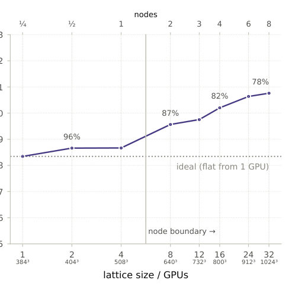
<figcaption class="paper-figure-caption"><b>Fig 4.</b> Figure 4: Strong (left) and weak (right) scaling behavior of TempLat on the A100 GPUs of the Noctua2 cluster.</figcaption>
</figure>
<figure class="paper-figure-card">
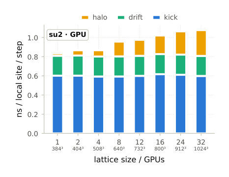
<figcaption class="paper-figure-caption"><b>Fig 5.</b> Figure 5: Decomposition of a single step in the 𝑆𝑈(2) benchmarks of the weak-scaling plot of fig. 4. Kick and drift show optimal behavior — their cost per site stays constant. The halo cost, in contrast, grows with the number of GPUs, since dividing the lattice further increases the surface-to- volume ratio of each local domain.</figcaption>
</figure>
</div>

<p><strong>Summary.</strong> This paper introduces TempLat, a versatile C++ engine designed for high-performance lattice field theory simulations in arbitrary dimensions. It uses advanced techniques like expression templates and Kokkos to ensure portability across CPUs and GPUs while maintaining compile-time optimization. The framework successfully benchmarks complex physics models, demonstrating state-of-the-art scaling performance.</p>
<p><strong>Why it may be interesting.</strong> While focused on lattice QFT, the underlying technology—a highly portable, expression-template-based framework for massively parallel computation—is directly relevant to simulating complex quantum many-body systems beyond standard Hamiltonians.</p>
<details>
<summary>Detailed structure</summary>
<p><strong>Main problem.</strong> The need for an efficient, versatile, and high-performance software framework capable of simulating lattice field theories across various physical regimes.</p>
<p><strong>Main result.</strong> TempLat provides a dimension-agnostic C++ engine that achieves excellent strong and weak scaling on both CPU clusters and modern GPUs by decoupling mathematical expressions from hardware implementation.</p>
<p><strong>Method.</strong> The framework uses expression templates to translate high-level mathematical expressions almost verbatim into highly optimized, device-specific C++ kernels, supporting hybrid MPI/shared-memory parallelization via Kokkos.</p>
<p><strong>Model / system.</strong> It is designed for lattice field theories, simulating systems ranging from QCD and early-universe dynamics ($   ext{SU}(2)$ Yang–Mills) to classical statistical models like the $\phi^4$ theory. It supports various gauge groups and complex field types.</p>
<p><strong>Key observables.</strong> Wall-clock time per lattice site per step; scaling behavior (strong/weak); average values of fields ($\langle \phi 
angle$).</p>
<p><strong>Important parameters / regimes.</strong> Lattice dimensions ($d$), coupling constants ($\lambda$), simulation time steps ($dt$), and hardware resources (CPU cores, GPU count).</p>
<p><strong>Assumptions / limitations.</strong> The core engine assumes that assignment triggers the necessary evaluation across the lattice; performance comparisons highlight differences between pencil vs. slab decomposition strategies for DFTs.</p>
<p><strong>Figures summary.</strong> Figures illustrate scaling behavior for $SU(2)$ YM fields on GPUs, comparing TempLat to HILA; Figure 7 benchmarks ParaFaFT's FFT performance against established libraries (FFTW3/cuFFTMp) across various parallelization schemes.</p>
<p><strong>Paper structure.</strong> The paper introduces the framework by detailing its mathematical abstraction capabilities and hardware portability. It then demonstrates applications through benchmarking diverse physical systems, including scalar field dynamics ($\phi^4$) and gauge theories ($SU(2)$ YM), culminating in detailed performance analyses of core components like DFTs.</p>
</details>
<details>
<summary>Abstract</summary>
<p>We present TempLat, a C++ framework for lattice field theory simulations in arbitrary dimensions. Its symbolic language, built on expression templates, translates mathematical expressions almost verbatim into C++ while compiling to highly optimized kernels, in contexts ranging from classical-statistical to Monte Carlo simulations. TempLat is performance-portable: building on Kokkos, it supports large CPU clusters, as well as NVIDIA and AMD GPUs. Its abstraction of hardware into a device concept makes TempLat extensible to future architectures. We demonstrate excellent strong and weak scaling on both CPUs and GPUs. We also present ParaFaFT, a standalone parallel discrete Fourier transform library supporting arbitrary dimensions on all of the above hardware, and benchmark its scaling. Both are open source and available on GitHub, and power a new release of CosmoLattice, a widely used early-universe simulation library now available on GPUs.</p>
</details>
<p><sub><a href="#top">↑ back to top</a></sub></p>

<p><a id="paper-2607.25892"></a></p>
<h3 id="bosonic-condensed-phase-real-time-dynamics-from-ring-polymer-molecular-dynamics"><a href="http://arxiv.org/abs/2607.25892v1">Bosonic Condensed Phase Real-time Dynamics from Ring Polymer Molecular Dynamics</a></h3>
<p><strong>Authors:</strong> Yotam M. Y. Feldman, Sourav Karmakar, Sutirtha Paul, Jacob Higer, Adrian Del Maestro, Barak Hirshberg<br>
<strong>Type:</strong> theory · <strong>Category:</strong> statistical mechanics · <strong>PDF:</strong> <a href="https://arxiv.org/pdf/2607.25892v1">https://arxiv.org/pdf/2607.25892v1</a><br>
<strong>Analysis basis:</strong> full PDF text, analyzed in chunks
<strong>Topic relevance:</strong> <code>non-equilibrium dynamics</code> <strong>2/5</strong> · <code>Keldysh / 2PI / non-Gaussian methods</code> <strong>1/5</strong></p>
<div class="figure-strip-hint">↔ Scroll figures horizontally</div>
<div class="paper-figures-scroll">
<figure class="paper-figure-card">
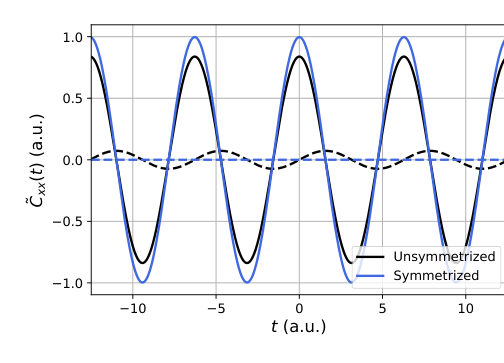
<figcaption class="paper-figure-caption"><b>Fig 1.</b> FIG. 1. Exact Kubo-transformed correlation functions of N = 2 non- interacting bosons in a one-dimensional harmonic trap at β = 1 a.u.. Solid and dashed lines represent the real and imaginary part of the correlation function, respectively. For the unsymmetrized position operator (in black), ˜Cxx(t) ≡˜Cx1x1(t). For the symmetrized position operator (in blue), ˜Cxx(t) ≡1</figcaption>
</figure>
<figure class="paper-figure-card">
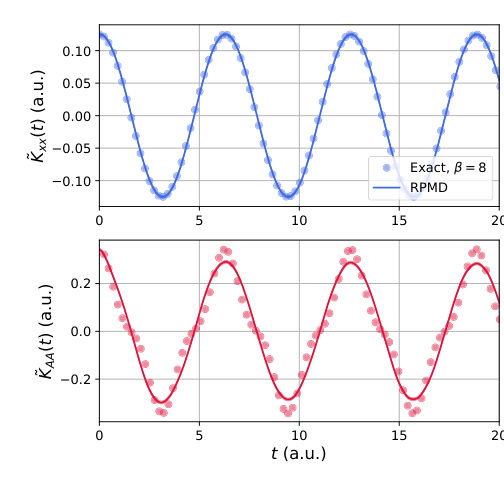
<figcaption class="paper-figure-caption"><b>Fig 2.</b> FIG. 2. Bosonic RPMD autocorrelation functions for the posi- tion operator ˆx = ∑N ℓ=1 ˆxℓ(upper panel) and the nonlinear operator ˆA = ∑N ℓ=1 ˆx3 ℓ(lower panel) for a system of N = 4 non-interacting bosons in a harmonic trap at β = 8 a.u. Note that the position coordi- nate is expressed in units of the harmonic oscillator length p</figcaption>
</figure>
<figure class="paper-figure-card">
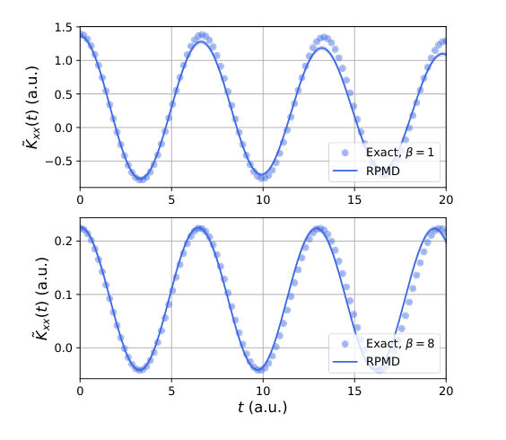
<figcaption class="paper-figure-caption"><b>Fig 3.</b> FIG. 3. Bosonic RPMD position autocorrelation function for a sys- tem of N = 4 non-interacting bosons in a weakly anharmonic trap at β = 1 a.u. (upper panel) and β = 8 a.u. (lower panel). Symbols represent the exact Kubo-transformed correlation function obtained numerically.</figcaption>
</figure>
<figure class="paper-figure-card">
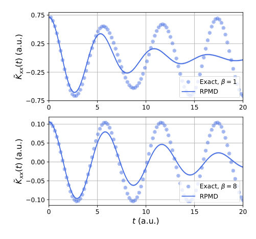
<figcaption class="paper-figure-caption"><b>Fig 4.</b> FIG. 4. Bosonic RPMD position autocorrelation function for a sys- tem of N = 4 non-interacting bosons in a quartic trap at β = 1 a.u. (upper panel) and β = 8 a.u. (lower panel). Symbols represent the exact Kubo-transformed autocorrelation function obtained numeri- cally.</figcaption>
</figure>
<figure class="paper-figure-card">
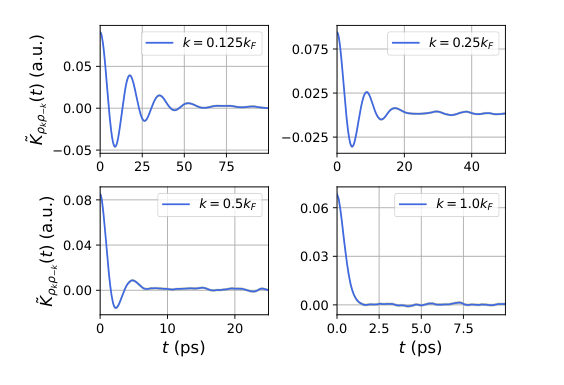
<figcaption class="paper-figure-caption"><b>Fig 5.</b> FIG. 5. Bosonic RPMD density-density real-time correlation func- tion for a system of N = 32 interacting bosons at T = 1 K for four different momentum transfers k/kF = 0.125,0.25,0.5,1.0.</figcaption>
</figure>
</div>

<p><strong>Summary.</strong> The paper introduces an advanced bosonic Ring Polymer Molecular Dynamics (RPMD) method to calculate real-time correlation functions for interacting bosons. This technique bypasses the severe dynamical sign problem inherent in direct quantum simulations. It successfully enables the first direct simulation of finite-temperature, real-time dynamics for large bosonic condensed phases.</p>
<p><strong>Why it may be interesting.</strong> This work provides a powerful, non-perturbative tool for simulating real-time quantum dynamics in bosonic many-body systems, overcoming major limitations associated with path integral methods.</p>
<details>
<summary>Detailed structure</summary>
<p><strong>Main problem.</strong> The primary goal is developing a method to accurately approximate real-time correlation functions and quantum transport coefficients for bosonic condensed phases.</p>
<p><strong>Main result.</strong> The authors developed a bosonic Ring Polymer Molecular Dynamics (RPMD) method that enables the direct simulation of finite-temperature, real-time dynamics for large bosonic systems using RPMD for the first time.</p>
<p><strong>Method.</strong> They extend standard RPMD by incorporating bosonic exchange symmetry into the classical ring polymer Hamiltonian and utilizing the Kubo-transformed correlation function estimator.</p>
<p><strong>Model / system.</strong> The work focuses on bosonic condensed phases, benchmarked on harmonic and anharmonic model systems, and applied specifically to the Lieb-Liniger gas (1D bosons with contact interactions).</p>
<p><strong>Key observables.</strong> Real-time correlation functions (e.g., density-density), quantum transport coefficients, and the Dynamic Structure Factor (DSF).</p>
<p><strong>Important parameters / regimes.</strong> Temperature ($eta$), time ($t$), momentum transfer ($k/k_F$), and the number of ring polymer beads ($P$).</p>
<p><strong>Assumptions / limitations.</strong> The method is exact in the harmonic, short-time, and high-temperature limits; it relies on the assumption that correlated observables are symmetric under particle exchange for bosons.</p>
<p><strong>Figures summary.</strong> Figures compare bosonic vs. distinguishable particle dynamics (e.g., position autocorrelation), showing how the bosonic symmetry manifests dynamically, and illustrate the accuracy of the method across different anharmonic potentials.</p>
<p><strong>Paper structure.</strong> The paper first establishes the general problem (sign problem in real-time quantum simulation) before developing the specific bosonic RPMD formalism. It then benchmarks this method on simple models (harmonic/anharmonic traps) to validate its theoretical limits and finally applies it to complex systems like the Lieb-Liniger gas.</p>
</details>
<details>
<summary>Abstract</summary>
<p>We present a method for approximating real-time correlation functions and quantum transport coefficients of bosonic condensed phases. The direct evaluation of quantum real-time correlation functions in the path integral formulation is impossible due to a severe dynamical sign problem. Evaluating imaginary-time correlation functions and inverting them using analytic continuation is famously ill-posed. Ring polymer molecular dynamics (RPMD) provides an alternative approach resulting in accurate approximations for real-time correlation functions of condensed phases but neglects exchange effects. In this work, we develop a bosonic RPMD method, which is exact in the harmonic, short time, and high temperature limits. A critical enabling observation is that the Kubo-transformed correlation function for bosons is real only when the correlated observables are symmetric under exchange. We benchmark the method on harmonic and anharmonic model systems and then use it to directly obtain the Lieb-Liniger gas density-density real-time correlation functions at various temperatures and momentum transfers. This work enables the direct simulation of finite-temperature, real-time dynamics of large bosonic condensed phases using RPMD for the first time.</p>
</details>
<p><sub><a href="#top">↑ back to top</a></sub></p>

<p><a id="paper-2607.25865"></a></p>
<h3 id="omniqec-discovering-practical-quantum-error-correcting-codes-by-an-ai-scientist"><a href="http://arxiv.org/abs/2607.25865v1">OmniQEC: discovering practical quantum error-correcting codes by an AI scientist</a></h3>
<p><strong>Authors:</strong> Ge Yan, Shanchuan Li, Pengyue Ma, Qixin Zhang, Pingchuan Ma, Jianping Wang, Min-Hsiu Hsieh, Yuxuan Du<br>
<strong>Type:</strong> theory · <strong>Category:</strong> quantum information and computing · <strong>PDF:</strong> <a href="https://arxiv.org/pdf/2607.25865v1">https://arxiv.org/pdf/2607.25865v1</a><br>
<strong>Analysis basis:</strong> full PDF text, analyzed in chunks
<strong>Topic relevance:</strong> <code>QC/QI experiment</code> <strong>2/5</strong> · <code>methods for driven-dissipative</code> <strong>1/5</strong></p>
<div class="figure-strip-hint">↔ Scroll figures horizontally</div>
<div class="paper-figures-scroll">
<figure class="paper-figure-card">
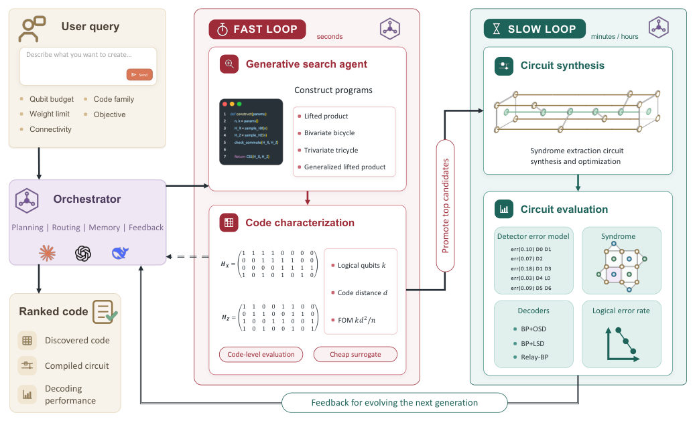
<figcaption class="paper-figure-caption"><b>Fig 1.</b> FIG. 1. Schematic illustration of OmniQEC. A user specifies a QEC design objective, such as the target code family, optimization criterion, physical-qubit budget, connectivity, native gate set, and available ancilla resources. The LLM-based orchestrator translates this objective into a structured discovery task, maintains the self-evolving discovery memory, and routes information across a dual-loop workflow. In the fast loop, the code-search agent proposes executable code-construction programs, which are converted into candidate QEC codes and screened by the code-characterization module using code-level properties, including validity, logical-qubit number, code distance, and the code-level...</figcaption>
</figure>
<figure class="paper-figure-card">
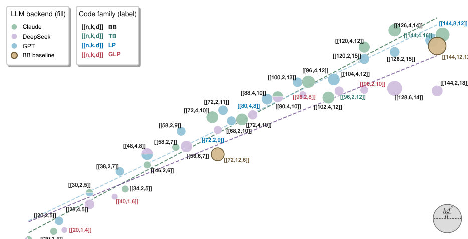
<figcaption class="paper-figure-caption"><b>Fig 2.</b> FIG. 2. Circuit-level performance frontier discovered by OmniQEC. Circuit-level performance as a function of the physical-qubit budget N, including data qubits and stabilizer-measurement ancillas. The vertical axis reports logical-error suppression, −log10(pLER), where pLER is the logical error rate per round per logical qubit. Marker fill denotes the LLM backend used by the orchestrator, and pie markers indicate codes independently discovered by multiple backends. The BB [[72, 12, 6]] and [[144, 12, 12]] codes are included as reference codes. Label color denotes the code family, and circle area is proportional to the fast-loop code-level proxy Φcode. The discovered codes form a clear...</figcaption>
</figure>
<figure class="paper-figure-card">
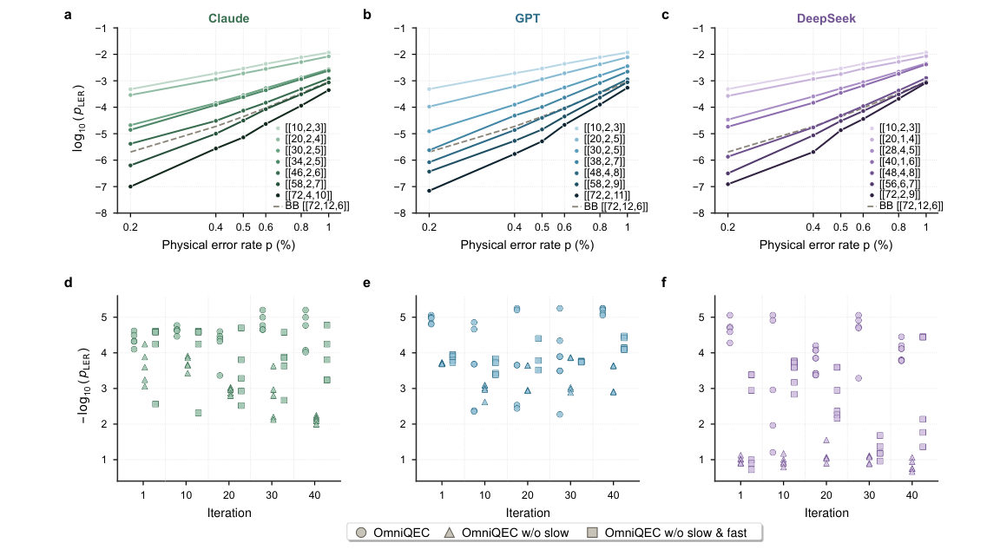
<figcaption class="paper-figure-caption"><b>Fig 3.</b> FIG. 3. Circuit-level validation and loop ablation. a–c, Physical-error-rate sweeps for representative frontier codes discovered by OmniQEC using Claude Opus 4.8 (a), GPT-5.5 (b) and DeepSeek-V4-Pro (c). The BB [[72, 12, 6]] code is shown as a reference under the same syndrome-extraction and decoding protocol. Solid lines denote OmniQEC-discovered codes and dashed lines denote the BB reference. The fitted scaling pLER ∝pΓ gives the LER-scaling exponent Γ. d–f, Ablation of discovery feedback for Claude Opus 4.8 (d), GPT-5.5 (e) and DeepSeek-V4-Pro (f). Each marker denotes one of the top- five candidates obtained at the corresponding iteration, evaluated by the same circuit-level protocol and...</figcaption>
</figure>
<figure class="paper-figure-card">
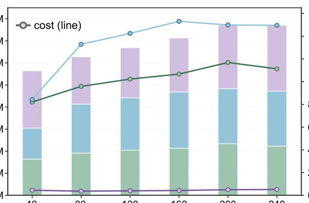
<figcaption class="paper-figure-caption"><b>Fig 4.</b> FIG. 4. LLM-side token usage and API cost. Bars show total API token consumption, including input, output and reasoning tokens, and lines show the corresponding API cost for each backend. Colors denote the LLM backend, using the same backend color coding as in Fig. 3.</figcaption>
</figure>
</div>

<p><strong>Summary.</strong> The paper presents OmniQEC, a novel AI framework designed to discover practical Quantum Error-Correcting codes by simulating their performance on real quantum hardware. It employs a synergistic slow-fast loop where LLMs coordinate code generation and circuit evaluation. The results demonstrate that this physically informed approach yields superior error suppression compared to traditional methods.</p>
<p><strong>Why it may be interesting.</strong> This work directly addresses the gap between theoretical code design and physical implementation feasibility in quantum computing. The use of LLMs as an 'AI scientist' to guide complex scientific discovery is highly relevant to open quantum systems research that requires integrating multiple simulation/optimization modules.</p>
<details>
<summary>Detailed structure</summary>
<p><strong>Main problem.</strong> The challenge of discovering Quantum Error-Correcting (QEC) codes that are truly practical for deployment, as performance depends on the complex interplay between code structure, hardware constraints, syndrome extraction, and decoding.</p>
<p><strong>Main result.</strong> OmniQEC discovers QEC codes that show steadily improving logical error suppression compared to standard reference codes when physical qubit budgets increase. The framework proves that circuit-level evaluation is superior to traditional code-level metrics for assessing practical performance.</p>
<p><strong>Method.</strong> The authors introduce OmniQEC, an AI scientist system orchestrated by LLMs that uses a slow–fast synergistic workflow. This combines fast, inexpensive code-level screening with a slow, physically grounded circuit-level evaluation loop.</p>
<p><strong>Model / system.</strong> The focus is on QEC codes, specifically evaluating qLDPC construction families, designed for implementation on modern quantum processors. The process models the full cycle from abstract code design to physical circuit execution and decoding.</p>
<p><strong>Key observables.</strong> Logical Error Rate (LER) measured via $-\log_{10}(	ext{pLER})$, alongside code-level metrics like logical qubits ($k$), distance ($d$), and $\Phi_{code}$.</p>
<p><strong>Important parameters / regimes.</strong> Total physical-qubit budget ($N$), qubit connectivity, and the specific LLM backend used for orchestration.</p>
<p><strong>Assumptions / limitations.</strong> The primary assumption is that an iterative, AI-guided search process can systematically navigate the vast design space to find hardware-friendly codes. A key limitation noted is the computational expense of the slow, circuit-level evaluation loop.</p>
<p><strong>Figures summary.</strong> Figure 1 illustrates the dual-loop workflow (fast proxy screening $
ightarrow$ slow circuit evaluation $
ightarrow$ evidence feedback). Figure 2 shows a performance frontier comparing discovered codes against reference codes based on LER vs. qubit budget. Figure 3/4 detail error suppression metrics and cost analysis.</p>
<p><strong>Paper structure.</strong> The paper introduces the OmniQEC framework, detailing its LLM-orchestrated, dual-loop methodology (fast proxy search feeding into slow circuit simulation). It presents comparative results showing outperformance over benchmarks, validates the necessity of the full loop, and concludes with future directions for multi-agent system integration.</p>
</details>
<details>
<summary>Abstract</summary>
<p>Quantum error correction (QEC) is indispensable for scalable fault-tolerant quantum computing. However, discovering QEC codes that remain effective is challenging, as logical performance depends on the interplay between code structure, hardware, syndrome extraction, and decoding, which often impose competing requirements. Here we introduce OmniQEC, an efficient AI scientist for discovering QEC codes suited to deployment on modern quantum processors. OmniQEC formulates QEC design as an iterative discovery process in which an orchestrator, implemented by advanced large language models (LLMs), coordinates code generation, code-level screening, syndrome-extraction synthesis, and decoder-based circuit evaluation. At its core, OmniQEC combines a self-evolving reasoning mechanism with a slow--fast synergistic workflow: a fast loop explores candidates using inexpensive code-level proxies, whereas a slow loop performs physically grounded circuit-level evaluation and feeds the resulting evidence back into the search. We evaluate OmniQEC across four qLDPC construction families, three LLM backends, and $14$ total-physical-qubit budgets per backend. The discovered codes show steadily improving logical-error suppression with increasing physical-qubit budgets and outperform the BB codes with $[\![72,12,6]\!]$ and $[\![144,12,12]\!]$ under complete-implementation budgets of 98 and 240 physical qubits, respectively. The discovered codes are hardware-friendly and may be of independent interest for practical QEC implementation. These findings pave the way towards LLM-assisted QEC discovery grounded in physically informed code--circuit--decoder co-design.</p>
</details>
<p><sub><a href="#top">↑ back to top</a></sub></p>

<p><a id="paper-2607.24976"></a></p>
<h3 id="quantum-reference-frames-beyond-subsystems-a-reconstruction-and-generalization-of-the-perspective-neutral-framework"><a href="http://arxiv.org/abs/2607.24976v1">Quantum reference frames beyond subsystems: a reconstruction and generalization of the perspective-neutral framework</a></h3>
<p><strong>Authors:</strong> Stefan L. Ludescher, Manuel Mekonnen, Thomas D. Galley, Markus P. Mueller<br>
<strong>Type:</strong> theory · <strong>Category:</strong> other · <strong>PDF:</strong> <a href="https://arxiv.org/pdf/2607.24976v1">https://arxiv.org/pdf/2607.24976v1</a><br>
<strong>Analysis basis:</strong> full PDF text, analyzed in chunks
<strong>Topic relevance:</strong> <code>analog quantum simulation</code> <strong>1/5</strong> · <code>correlated / nonlocal dissipation</code> <strong>1/5</strong> · <code>driven-dissipative phase transition</code> <strong>1/5</strong> · <code>entanglement &amp; information structure</code> <strong>1/5</strong> · <code>methods for driven-dissipative</code> <strong>1/5</strong> · <code>non-equilibrium dynamics</code> <strong>1/5</strong> · <code>quantum measurements</code> <strong>1/5</strong></p>
<div class="figure-strip-hint">↔ Scroll figures horizontally</div>
<div class="paper-figures-scroll">
<figure class="paper-figure-card">
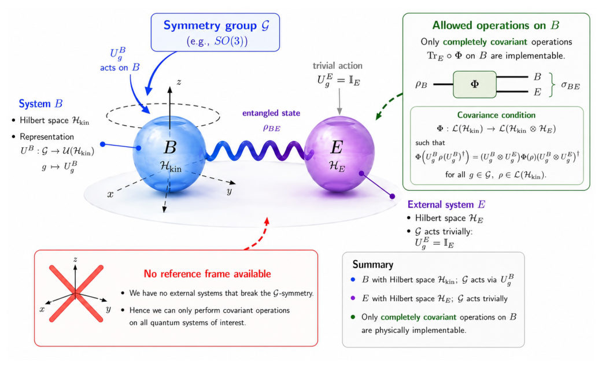
<figcaption class="paper-figure-caption"><b>Fig 1.</b> FIG. 1. First version of our scenario that motivates the PN framework. Due to the purifications of the operations on our system B of interest that are potentially held by some external system E, carrying the trivial representation of the symmetry group, the global absence of a frame of reference implies complete covariance for all operations on B. (AI disclosure: Illustration created with the assistance of ChatGPT 5.5.)</figcaption>
</figure>
<figure class="paper-figure-card">
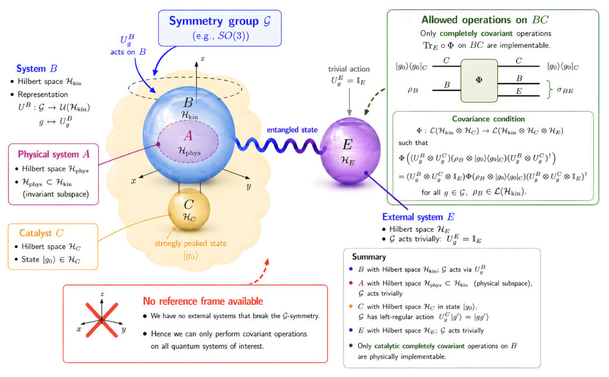
<figcaption class="paper-figure-caption"><b>Fig 2.</b> FIG. 2. Extension of the scenario of Figure 1 for the reconstruction of reduction maps and QRF changes of the PN framework. The only change is that B is replaced by the composite system BC, where C is an ideal reference frame. The mere role of C is to define what it means that some structure of B “points in some direction”, i.e. to break the symmetry while catalytically preserving its own local pure state. This allows for the implementation of arbitrary isometries Mg : Hphys →Hkin which play the role of reduction maps, and complete covariance constrains the transformation behavior across perspectives, in particular that of Mg over the different “directions” g ∈G. (AI disclosure:...</figcaption>
</figure>
<figure class="paper-figure-card">
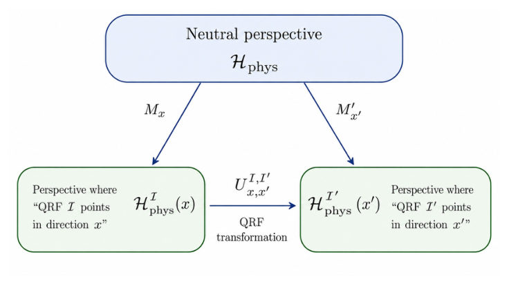
<figcaption class="paper-figure-caption"><b>Fig 3.</b> FIG. 3. QRF transformations as changes of perspective, similarly as in earlier formulations of the PN framework [8, 34]. Since Mx and M ′ x′ are isometries, the QRF transformations U I,I′</figcaption>
</figure>
<figure class="paper-figure-card">
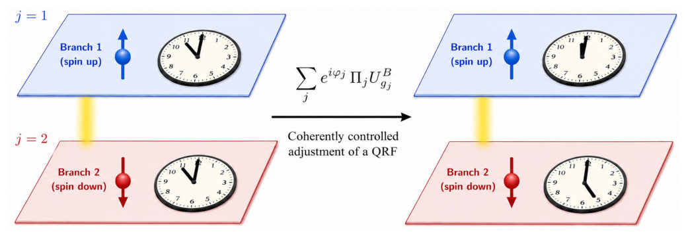
<figcaption class="paper-figure-caption"><b>Fig 4.</b> FIG. 4. As shown in Lemma 20, coherently controlled adjustments of a QRF are valid QRF transformations. A G-invariant observable X ∈B with eigenprojectors Πj (here, the spin of a spin-1/2 particle) defines the branches; depending on the value of X, i.e. on the branch j, the QRF is adjusted differently, described by group elements gj. At the same time, the relative phases between the branches can be altered. The special case that all gj (and all φj) are equal covers the case of the original gauge transformations U B g , treated in Lemma 17. (AI disclosure: Illustration created with the assistance of ChatGPT 5.5.)</figcaption>
</figure>
<figure class="paper-figure-card">
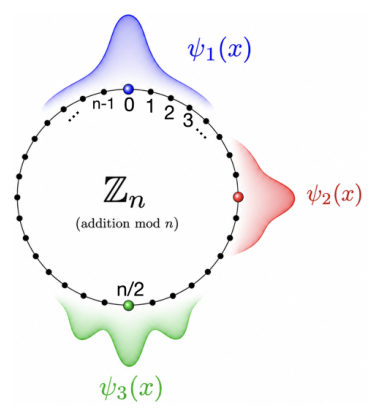
<figcaption class="paper-figure-caption"><b>Fig 5.</b> FIG. 5. The finite Abelian group Zn describes a discretized position space for N particles (here N = 3), with addition modulo n as translation. There is also an associated notion of momentum, and a discrete Fourier transform that relates the two. Hence, this provides a mathematically simple discrete version of the usual “particle on a line”, such that our results are directly applicable in a mathematically rigorous way. (AI disclosure: Illustration created with the assistance of ChatGPT 5.5.)</figcaption>
</figure>
</div>

<p><strong>Summary.</strong> This paper revolutionizes the concept of Quantum Reference Frames by generalizing them from simple subsystems to covariant quantum instruments. By imposing strict operational constraints based on complete covariance, it derives fundamental physical principles, offering novel explanations for particle statistics and time evolution in complex, interacting quantum systems.</p>
<p><strong>Why it may be interesting.</strong> It provides a deep operational foundation for defining physical observables (like time or particle labels) when standard subsystem decompositions fail due to interactions or global symmetries, which is crucial for advanced many-body theory.</p>
<details>
<summary>Detailed structure</summary>
<p><strong>Main problem.</strong> The work generalizes Quantum Reference Frames (QRFs) beyond simple tensor factor subsystems to covariant quantum instruments, aiming for a unified operational understanding of perspectival quantum mechanics.</p>
<p><strong>Main result.</strong> This generalized framework provides explanations for the symmetrization postulate, entanglement description between bosons and fermions, and allows relational clocks to reproduce the Schrödinger equation even in interacting systems.</p>
<p><strong>Method.</strong> The authors reconstruct and generalize the perspective-neutral approach by imposing the operational constraint that only completely covariant operations can be physically implemented on a system.</p>
<p><strong>Model / system.</strong> The framework analyzes quantum systems using QRFs, extending from subsystem descriptions to general covariant quantum instruments. Applications include modeling indistinguishable particles and relational time evolution in interacting many-body settings.</p>
<p><strong>Key observables.</strong> Completely covariant operations, constraint equations (e.g., C|ψ&gt; = 0), and the resulting effective Hamiltonians for relative motion.</p>
<p><strong>Important parameters / regimes.</strong> The structure of the symmetry group G (generalized from finite to compact Lie groups) and interaction coupling constants K.</p>
<p><strong>Assumptions / limitations.</strong> The core assumption is that physical reality must be describable solely through completely covariant operations, which dictates the allowed measurements and dynamics.</p>
<p><strong>Paper structure.</strong> The paper first reconstructs the perspective-neutral framework operationally before generalizing it to covariant instruments. It then details applications concerning indistinguishable particles, entanglement, and relational time evolution in interacting systems.</p>
</details>
<details>
<summary>Abstract</summary>
<p>We generalize the notion of quantum reference frames (QRFs) to cases where the frame does not necessarily correspond to a tensor factor subsystem, but to a covariant quantum instrument. This unlocks a variety of physical applications: "frames of labeling" for indistinguishable particles, suggesting explanations for the symmetrization postulate and the absence of parastatistics, and yielding a transparent description of the entanglement of bosons and fermions; and relational clocks reproducing the Schrödinger equation exactly even when all subsystems are interacting or when there are frequency superselection sectors. Our work generalizes the perspective-neutral approach to QRFs pioneered by Höhn and co-authors, which we reconstruct from a simple operational scenario. We give a resource-theoretic grounding of this framework, and show how the notion of completely covariant operations explains the relevance of the charge-zero sector and the pure-state transformation behavior across perspectives. This also suggests operational clarifications of some aspects of constraint quantization, e.g. of the meaning of constraint equations such as $C|ψ\rangle=0$. Some of our results, such as our generalization of relationalization maps to instruments, apply more broadly to other QRF frameworks too, and they contribute to bridging the gap between operational quantum information theory and the internal QRF research program.</p>
</details>
<p><sub><a href="#top">↑ back to top</a></sub></p>

<p><a id="paper-2607.25445"></a></p>
<h3 id="quantum-estimates-for-classical-polynomial-optimization"><a href="http://arxiv.org/abs/2607.25445v1">Quantum estimates for classical polynomial optimization</a></h3>
<p><strong>Authors:</strong> Oleg Evnin<br>
<strong>Type:</strong> theory · <strong>Category:</strong> other · <strong>PDF:</strong> <a href="https://arxiv.org/pdf/2607.25445v1">https://arxiv.org/pdf/2607.25445v1</a><br>
<strong>Analysis basis:</strong> full PDF text, analyzed in chunks
<strong>Topic relevance:</strong> <code>Keldysh / 2PI / non-Gaussian methods</code> <strong>1/5</strong> · <code>analog quantum simulation</code> <strong>1/5</strong> · <code>driven-dissipative phase transition</code> <strong>1/5</strong> · <code>methods for driven-dissipative</code> <strong>1/5</strong></p>
<div class="figure-strip-hint">↔ Scroll figures horizontally</div>
<div class="paper-figures-scroll">
<figure class="paper-figure-card">
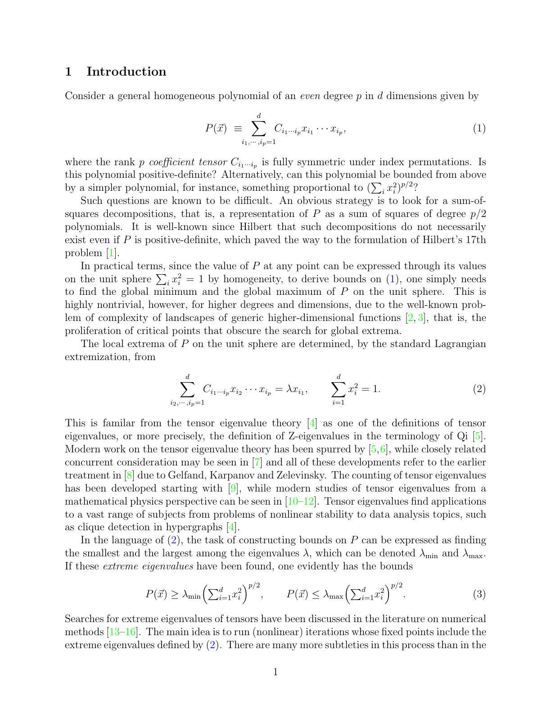
<figcaption class="paper-figure-caption"><b>Fig 1.</b> Low-resolution page preview, page 2</figcaption>
</figure>
<figure class="paper-figure-card">
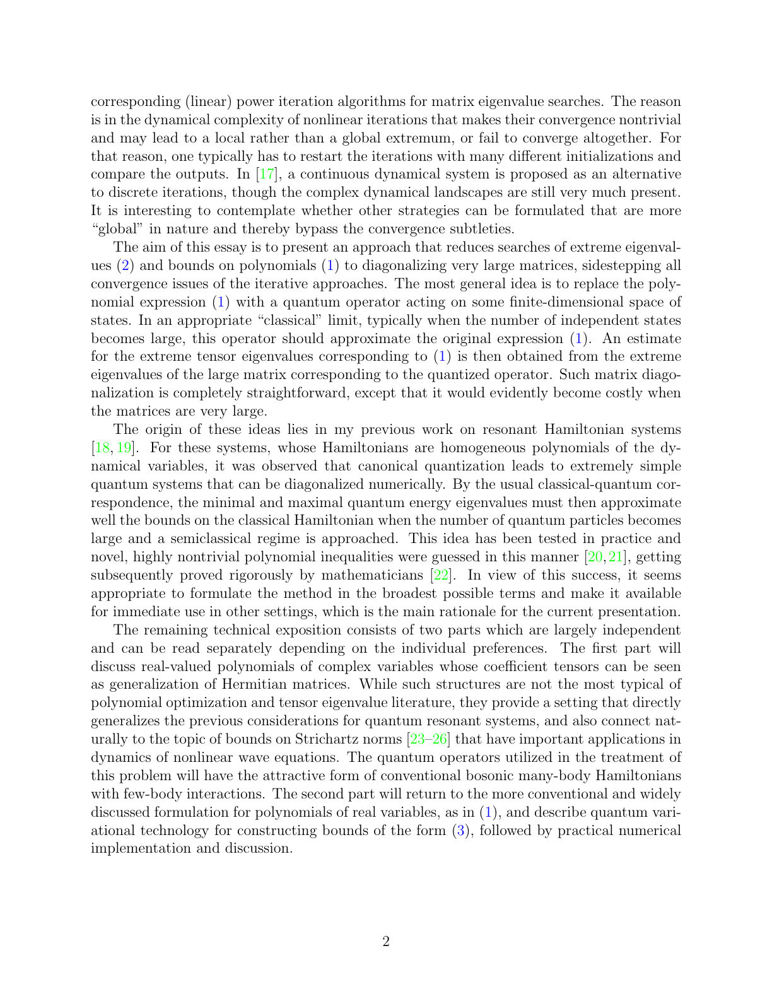
<figcaption class="paper-figure-caption"><b>Fig 2.</b> Low-resolution page preview, page 3</figcaption>
</figure>
<figure class="paper-figure-card">
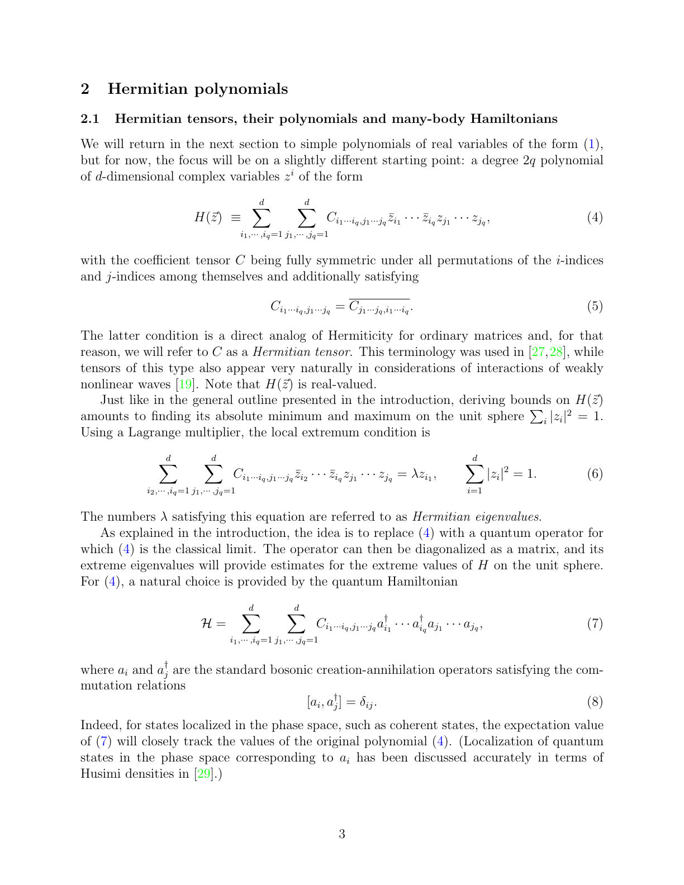
<figcaption class="paper-figure-caption"><b>Fig 3.</b> Low-resolution page preview, page 4</figcaption>
</figure>
<figure class="paper-figure-card">
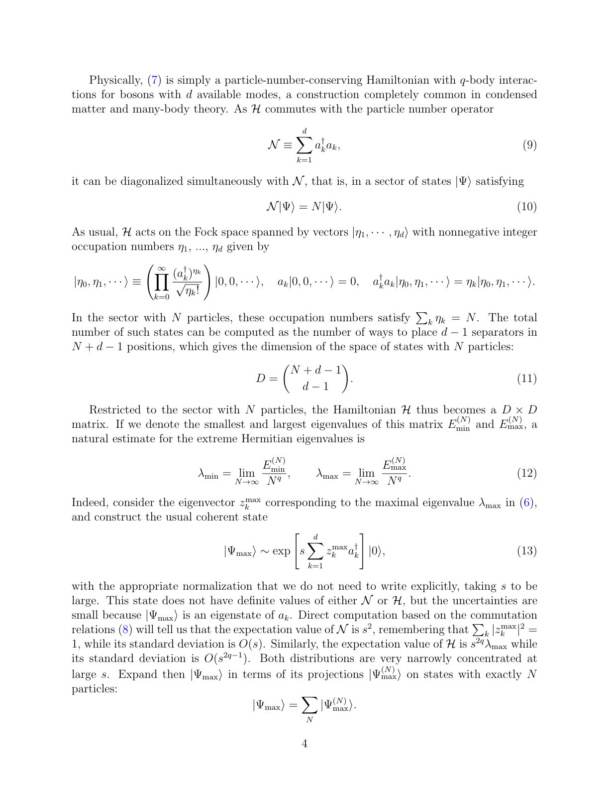
<figcaption class="paper-figure-caption"><b>Fig 4.</b> Low-resolution page preview, page 5</figcaption>
</figure>
<figure class="paper-figure-card">
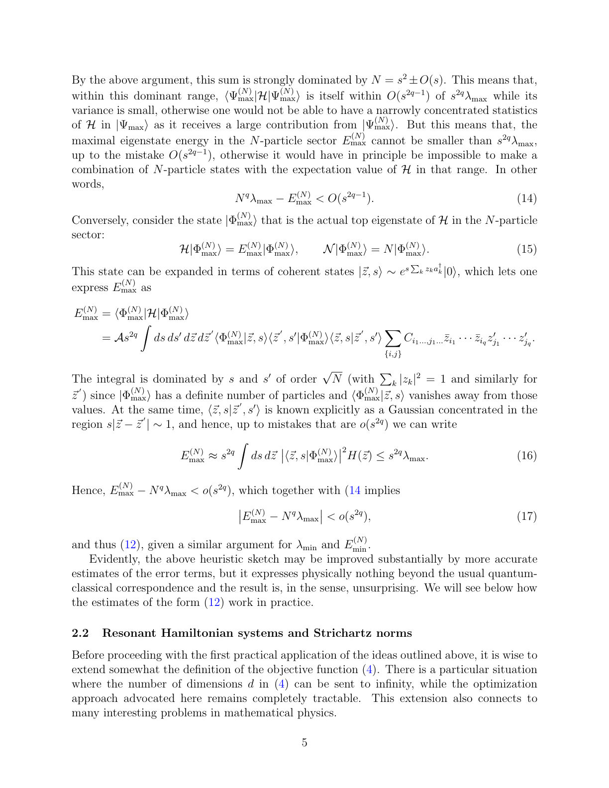
<figcaption class="paper-figure-caption"><b>Fig 5.</b> Low-resolution page preview, page 6</figcaption>
</figure>
</div>

<p><strong>Summary.</strong> This paper introduces a novel method to find bounds on multivariate homogeneous polynomials by reformulating the problem in terms of quantum mechanics. It replaces the polynomial with an effective Hamiltonian operator and estimates its extreme eigenvalues via matrix diagonalization. This technique provides powerful, quantum-derived heuristics for solving difficult problems in mathematical physics and optimization theory.</p>
<p><strong>Why it may be interesting.</strong> This work provides a powerful mathematical bridge between classical optimization theory and quantum mechanics. For AMO/open quantum systems researchers, it suggests using spectral analysis of large quantum operators as a systematic heuristic tool to constrain the behavior of complex physical observables that are hard to analyze classically.</p>
<details>
<summary>Detailed structure</summary>
<p><strong>Main problem.</strong> The core problem is finding rigorous lower and upper bounds for multivariate homogeneous polynomials, which is mathematically equivalent to determining the extreme eigenvalues of their coefficient tensors.</p>
<p><strong>Main result.</strong> The authors propose a novel quantum-inspired variational method where bounding the polynomial is recast as diagonalizing an auxiliary, large quantum operator (Hamiltonian). This approach successfully yields conjectured sharp inequalities for classical polynomial optimization problems.</p>
<p><strong>Method.</strong> The technique involves replacing the classical polynomial $P(\vec{x})$ with a quantum mechanical operator $\hat{H}$ acting in a high-dimensional state space. The extreme eigenvalues of the tensor are then estimated by finding the extreme eigenvalues of this resulting matrix representation of $\hat{H}$.</p>
<p><strong>Model / system.</strong> The analysis is applied to general multivariate homogeneous polynomials, often modeled via Hamiltonians derived from quantum systems like those involving bosonic creation/annihilation operators (e.g., Lowest Landau Level or resonant Hamiltonian classes).</p>
<p><strong>Key observables.</strong> The extreme eigenvalues ($\lambda_{\min}, \lambda_{\max}$) of the coefficient tensor, which correspond to the minimum and maximum energy eigenvalues ($E_{\min}, E_{\max}$) of the quantum Hamiltonian in specific sectors.</p>
<p><strong>Important parameters / regimes.</strong> The dimensionality of the state space (which can be very large), the particle number sector $N$, and coupling constants ($\sigma$).</p>
<p><strong>Assumptions / limitations.</strong> The method relies on the semiclassical approximation that the expectation value of the quantum operator tracks the classical polynomial, and it serves as a heuristic guide for proving analytic inequalities.</p>
<p><strong>Paper structure.</strong> The paper first establishes the difficulty of bounding polynomials via tensor eigenvalues. It then introduces the quantum variational method by mapping the problem to Hamiltonian diagonalization in finite sectors (fixed particle number $N$). Finally, it applies this framework to specific physical models (like LLL or resonant systems) to derive concrete, conjectured bounds.</p>
</details>
<details>
<summary>Abstract</summary>
<p>The problem of finding lower and upper bounds on multivariate homogeneous polynomials is both difficult and important given its applications to questions ranging from dynamical stability in complex potential landscapes to data analysis. From the standpoint of tensor eigenvalue theory, the question is equivalent to finding the smallest and the largest eigenvalues of the coefficient tensor corresponding to the given polynomial. Standard approaches outlined in the literature amount to running nonlinear iterations in search for the optimal rays along which the growth of the polynomial is fastest or slowest. Unlike the case of matrices (or their corresponding multivariate quadratic forms) convergence of such algorithms for higher-rank tensors is capricious due to the complex topography of polynomial objective functions. In this essay, a very different strategy, inspired by quantum-mechanical variational methods, is introduced for finding bounds on polynomials. The original polynomial is replaced by an operator acting in a suitably chosen (large) space of states, such that in an appropriate "classical" limit this operator approaches the original polynomial expression made of commutative variables. As a result, approximating the smallest and largest eigenvalues of the coefficient tensor, and thus finding bounds on polynomials, amounts to diagonalizing the resulting quantum operator, represented as a large matrix, and then inspecting the smallest and largest eigenvalues of this matrix. This approach is then successfully applied to standard test examples from tensor eigenvalue literature and other problems of interest in mathematical physics including Strichartz-type inequalities.</p>
</details>
<p><sub><a href="#top">↑ back to top</a></sub></p>

<p><a id="paper-2607.24972"></a></p>
<h3 id="a-kernel-based-density-of-states-estimator-for-quantum-computing"><a href="http://arxiv.org/abs/2607.24972v1">A Kernel-Based Density of States Estimator for Quantum Computing</a></h3>
<p><strong>Authors:</strong> Julio Cesar Siqueira Rocha<br>
<strong>Type:</strong> theory · <strong>Category:</strong> statistical mechanics · <strong>PDF:</strong> <a href="https://arxiv.org/pdf/2607.24972v1">https://arxiv.org/pdf/2607.24972v1</a><br>
<strong>Analysis basis:</strong> full PDF text, analyzed in chunks
<strong>Topic relevance:</strong> <code>analog quantum simulation</code> <strong>1/5</strong> · <code>methods for driven-dissipative</code> <strong>1/5</strong> · <code>quantum measurements</code> <strong>1/5</strong></p>
<div class="figure-strip-hint">↔ Scroll figures horizontally</div>
<div class="paper-figures-scroll">
<figure class="paper-figure-card">
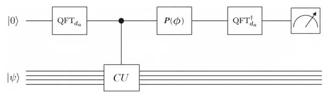
<figcaption class="paper-figure-caption"><b>Fig 1.</b> FIG. 1. Quantum circuit implementing a single Rodeo cycle with an ancilla qudit of dimension da. The system register is initialized in an arbitrary state |ψ⟩, while the ancilla is prepared in the computational basis state |0⟩. A quantum Fourier transform (QFT) prepares the ancilla in an equal superposition of its basis states, which controls the time-evolution operator, CU, for a randomly sampled evolution time t. A phase shift P(ϕ) is subsequently applied, followed by the inverse quantum Fourier transform (QFT†). Finally, the ancilla is measured in the computational basis.</figcaption>
</figure>
<figure class="paper-figure-card">
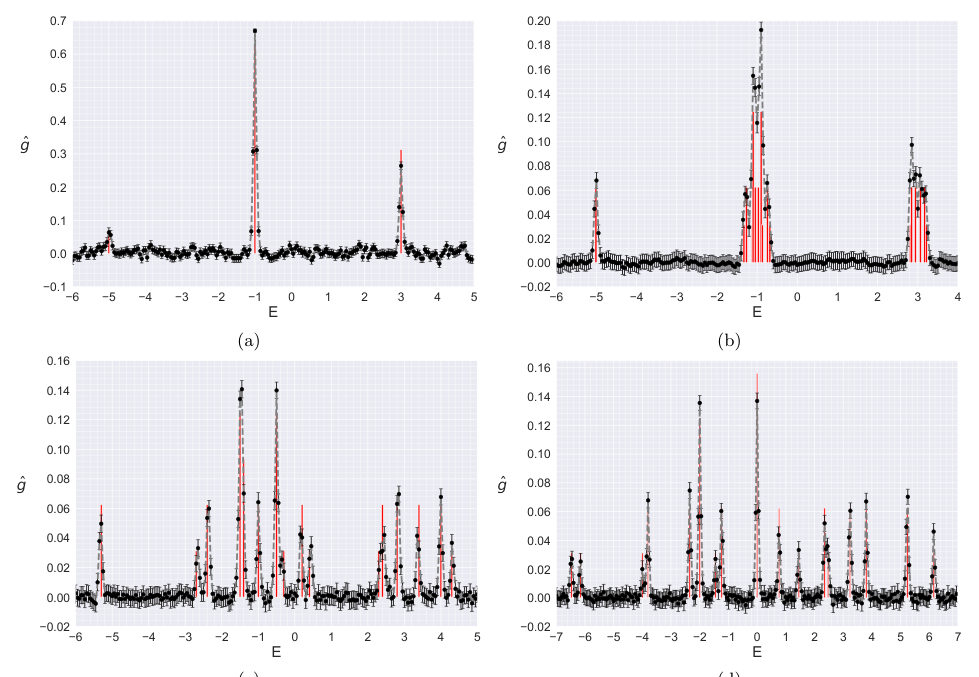
<figcaption class="paper-figure-caption"><b>Fig 2.</b> FIG. 2. DoS reconstruction for the 1D transverse-field Ising model using the Rodeo kernel method. For each target energy, the Rodeo algorithm was evaluated using 1 000 independent evolution times sampled from a Gaussian distribution with standard deviation σ = 20. Panels (a)–(d) correspond to transverse-field strengths B = 0, 0.1, 0.5 and 1.0, respectively. For B ̸= 0 the estimator was averaged over R = 10 Haar-random initial states; only one state was used for B = 0.</figcaption>
</figure>
<figure class="paper-figure-card">
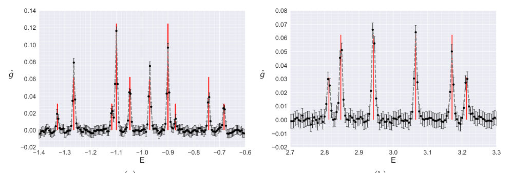
<figcaption class="paper-figure-caption"><b>Fig 3.</b> FIG. 3. Refinement of the DoS reconstruction for the previously merged peaks shown in Fig. 2(b) for the transverse-field Ising model with B = 0.1. The estimator was averaged over R = 10 independent Haar-random initial states. For each target energy, the Rodeo algorithm was performed using 1 000 evolution times sampled independently from a Gaussian distribution with standard deviation σ = 200, yielding a narrower spectral kernel and improved energy resolution. Panels (a) and (b) show enlarged views of the energy windows [−1.4, −0.6] and [2.7, 3.3], respectively.</figcaption>
</figure>
<figure class="paper-figure-card">
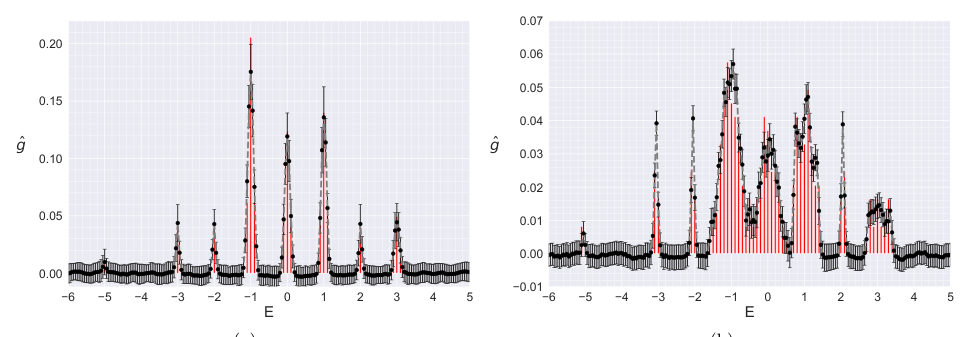
<figcaption class="paper-figure-caption"><b>Fig 4.</b> FIG. 4. DoS reconstruction for the one-dimensional spin-1 model using the Rodeo kernel method. For each target energy, the Rodeo algorithm was evaluated using 1 000 independent evolution times sampled from a Gaussian distribution with standard deviation σ = 20. Panels (a) and (b) correspond to transverse-field strengths B = 0.05 and 0.2, respectively.</figcaption>
</figure>
<figure class="paper-figure-card">
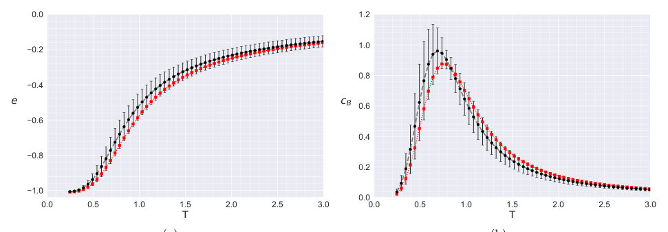
<figcaption class="paper-figure-caption"><b>Fig 5.</b> FIG. 5. Thermodynamic properties of the spin-1 ring with N = 5 spins in the presence of a transverse magnetic field B = 0.2. Panels (a) and (b) show the mean energy per spin and the specific heat at constant magnetic field as functions of temperature, respectively. Black circles correspond to the results obtained using the proposed kernel-based DoS estimator, while red squares denote the exact results obtained by direct Hamiltonian diagonalization.</figcaption>
</figure>
</div>

<p><strong>Summary.</strong> This paper introduces a kernel-based estimator for the Density of States in large quantum systems by adapting classical signal processing techniques. It uses the 'Rodeo response' measured via single-ancilla circuits and averaging over random states to reconstruct the DoS, which is convolved with an analytically determined spectral filter. The method is validated on spin models, demonstrating its ability to recover thermodynamic properties like specific heat.</p>
<p><strong>Why it may be interesting.</strong> This work provides a powerful, resource-efficient technique to extract global spectral information (DoS) from local measurements achievable with near-term quantum hardware, bypassing the exponential scaling barrier of full diagonalization.</p>
<details>
<summary>Detailed structure</summary>
<p><strong>Main problem.</strong> The primary goal is reconstructing the Density of States (DoS), g(E), for quantum many-body systems whose Hilbert spaces are too large to be diagonalized directly.</p>
<p><strong>Main result.</strong> The authors show that averaging the Rodeo response over Haar-random input states yields a DoS convolved with an analytically derived spectral kernel, providing a direct quantum analogue to classical Kernel Polynomial Methods (KPM).</p>
<p><strong>Method.</strong> The method adapts KPM by using the time evolution measurement via the 'Rodeo response' and averaging this response over random initial states. This transforms the problem into a signal processing estimation task.</p>
<p><strong>Model / system.</strong> The analysis is general for quantum many-body systems described by a Hamiltonian, but validation is performed on specific models like the one-dimensional transverse-field Ising and spin-1 ring model.</p>
<p><strong>Key observables.</strong> Density of States g(E), spectral amplitude $\hat{g}(E)$, mean energy per spin $\langle e 
angle$, and specific heat $c_B$.</p>
<p><strong>Important parameters / regimes.</strong> The ancilla dimension ($d_a$), the number of random states sampled ($R$), the number of time steps ($N_t$), and the spectral kernel parameters (e.g., Gaussian width $\sigma$).</p>
<p><strong>Assumptions / limitations.</strong> Key assumptions include assuming Haar-random input states to ensure uniform spectral weight, and treating the total variance as a sum of statistical errors from random state sampling and temporal sampling.</p>
<p><strong>Figures summary.</strong> Figures illustrate the quantum circuit for the Rodeo cycle and show numerical comparisons between reconstructed DoS ($\hat{g}(E)$) versus exact results for various magnetic fields in the spin-1 model. Figure 5 compares derived thermodynamic quantities like specific heat ($c_B$) against exact diagonalization.</p>
<p><strong>Paper structure.</strong> The paper develops the theoretical framework by deriving the estimator, establishing the connection between signal processing window functions and quantum reconstruction kernels, and then validates this method using numerical simulations on known models (Ising/spin-1).</p>
</details>
<details>
<summary>Abstract</summary>
<p>The density of states (DoS) encodes the thermodynamic and spectral properties of quantum many-body systems, yet its reconstruction becomes intractable for Hilbert spaces too large to diagonalize. Classically, the kernel polynomial method (KPM) addresses this by combining stochastic trace estimation with a smoothing kernel. Here we show that the Rodeo algorithm---one of the simplest eigenvalue-location protocols for near-term quantum hardware---provides a direct quantum analogue of this approach. Averaging the Rodeo response over Haar-random input states yields the DoS convolved with a spectral kernel fixed entirely by the distribution of evolution times: the random states play the role of stochastic trace estimation, and the temporal sampling distribution that of the damping kernel. The construction requires only the standard single-ancilla circuit, and quantum typicality suppresses the statistical error as the Hilbert-space dimension grows. We derive the estimator and its uncertainties, establish an explicit dictionary between signal-processing window functions and quantum reconstruction kernels, and validate the method on the one-dimensional transverse-field Ising and spin-1 models.</p>
</details>
<p><sub><a href="#top">↑ back to top</a></sub></p>

<p><a id="paper-2607.25585"></a></p>
<h3 id="finite-temperature-lanczos-for-anisotropic-spin-systems-using-triple-hybrid-high-performance-computing"><a href="http://arxiv.org/abs/2607.25585v1">Finite-temperature Lanczos for anisotropic spin systems using triple-hybrid high-performance computing</a></h3>
<p><strong>Authors:</strong> J. Schnack<br>
<strong>Type:</strong> theory · <strong>Category:</strong> strongly correlated electrons · <strong>PDF:</strong> <a href="https://arxiv.org/pdf/2607.25585v1">https://arxiv.org/pdf/2607.25585v1</a><br>
<strong>Analysis basis:</strong> full PDF text, analyzed in chunks
<strong>Topic relevance:</strong> <code>analog quantum simulation</code> <strong>1/5</strong> · <code>exotic spin models in light-matter</code> <strong>1/5</strong> · <code>spintronics-quantum-optics interface</code> <strong>1/5</strong></p>
<div class="figure-strip-hint">↔ Scroll figures horizontally</div>
<div class="paper-figures-scroll">
<figure class="paper-figure-card">

<figcaption class="paper-figure-caption"><b>Fig 1.</b> Figure 1. Sketch of the MPI parallelization of a matrix-vector multiplication. Each rank hosts a section of all vectors and a stripe of the matrix. The first step fills the initially blank target vector vi with the contributions of the respective sections of vi−1 on the same rank. The needed parts of the matrix are given by colored blocks.</figcaption>
</figure>
<figure class="paper-figure-card">

<figcaption class="paper-figure-caption"><b>Fig 2.</b> Figure 2. Second MPI-step of the matrix-vector multiplication; the contributions of the respective sections of vi−1 on the same rank are added by using the correct part of the matrix strip given by the colored boxes.</figcaption>
</figure>
<figure class="paper-figure-card">

<figcaption class="paper-figure-caption"><b>Fig 3.</b> Figure 4. Susceptibility, MT/B, of a fictitious spin ring of N = 6 spins with s = 5/2 with nearest-neighbor Heisenberg exchange, strong single-ion easy-axis anisotropy as well as all- to-all dipolar interaction for B = 0.1 T (top) and B = 1 T (bottom). τ = 1 or 0 denotes the use or not-use of time reversed random vectors; NL provides the number of Lanczos steps for a single random vector, and R gives the number of employed random vectors according to (8) and (9).</figcaption>
</figure>
<figure class="paper-figure-card">

<figcaption class="paper-figure-caption"><b>Fig 4.</b> Figure 3. Heat capacity of a fictitious spin ring of N = 6 spins with s = 5/2 with nearest-neighbor Heisenberg exchange, strong single-ion easy-axis anisotropy as well as all-to-all dipo- lar interaction for B = 0.1 T (top) and B = 1 T (bottom). τ = 1 or 0 denotes the use or not-use of time reversed random vectors; NL provides the number of Lanczos steps for a single random vector, and R gives the number of employed random vectors according to (8) and (9).</figcaption>
</figure>
<figure class="paper-figure-card">

<figcaption class="paper-figure-caption"><b>Fig 5.</b> Figure 3 shows as a first result the heat capacity for two values of the magnetic field applied along the z-axis which is the symmetry axis of the ring. The various curves ori- gin from using time reversed random vectors (τ = 1) or not (τ = 0) together with NL Lanczos steps for each ran- dom vector and averages of the partition function over R random vectors according to (8) and (9). One notices that the heat capacity is astonishingly robust and well approximated by already rather small numbers of ran- dom vectors and Lanczos steps of the order of 100. This even holds for the low-temperature peak of the heat ca- pacity. Only for single-figured numbers of random vec- tors the accuracy is...</figcaption>
</figure>
</div>

<p><strong>Summary.</strong> This paper details a computational methodology to simulate anisotropic spin systems at finite temperatures by employing the Finite-Temperature Lanczos Method (FTLM). It overcomes severe scaling limitations by designing and implementing a highly parallelized, triple-hybrid high-performance computing scheme utilizing MPI, OpenMP, and GPUs. The work demonstrates its feasibility on complex molecular magnets like $  ext{Mn}_9$, providing insights into their magnetic properties.</p>
<p><strong>Why it may be interesting.</strong> This work directly addresses simulating quantum magnetism in large molecular clusters using state-of-the-art high-performance computing techniques, which is crucial for understanding magnetic materials beyond simple lattice models.</p>
<details>
<summary>Detailed structure</summary>
<p><strong>Main problem.</strong> To apply the finite-temperature Lanczos method (FTLM) to study anisotropic spin systems whose Hilbert spaces are too large for exact diagonalization.</p>
<p><strong>Main result.</strong> The authors successfully sketched a framework utilizing a triple-hybrid HPC scheme (MPI/CPU/GPU) to tackle the computational demands of FTLM for these complex magnetic models, demonstrating feasibility on systems like Mn9.</p>
<p><strong>Method.</strong> The core method is the Finite-Temperature Lanczos Method (FTLM), which approximates thermodynamic expectation values using trace estimators. The implementation heavily relies on parallelizing sparse matrix-vector multiplications across MPI ranks, CPU threads, and GPU engines.</p>
<p><strong>Model / system.</strong> The study focuses on anisotropic spin systems governed by a Hamiltonian including Heisenberg exchange, single-ion anisotropies, Zeeman terms, and dipolar interactions. Examples include fictitious ring molecules and $    ext{Mn}_9$ clusters.</p>
<p><strong>Key observables.</strong> Heat capacity ($C$), Magnetic Susceptibility ($\chi_M T / B$), and low-energy density of states.</p>
<p><strong>Important parameters / regimes.</strong> Inverse temperature ($eta = 1/k_B T$) and applied magnetic field strength ($B$).</p>
<p><strong>Assumptions / limitations.</strong> The primary approximation is the use of FTLM itself. The authors also discuss using an improved, symmetric form ($s$FTLM) despite its increased computational cost.</p>
<p><strong>Figures summary.</strong> Figures illustrate the parallel steps (MPI-step 1 and 2) of matrix-vector multiplication on a distributed memory architecture. Other figures show calculated heat capacity and susceptibility for model systems like the ring molecule and $   ext{Mn}_9$.</p>
<p><strong>Paper structure.</strong> The paper introduces the physical problem, details the mathematical framework (FTLM approximations), outlines the necessary computational infrastructure (triple-hybrid HPC scheme), and then presents results on specific spin models ($  ext{Mn}_9$, ring system) to validate the approach.</p>
</details>
<details>
<summary>Abstract</summary>
<p>Lanczos concepts are often realized on supercomputers. In view of modern architectures of high-performance computing triple-hybrid schemes employing MPI, CPU-openMP as well as GPU-openMP should be utilized. The present article sketches how such a scheme could be utilized in order to meet the demands of the finite-temperature Lanczos method for anisotropic spin systems.</p>
</details>
<p><sub><a href="#top">↑ back to top</a></sub></p>

<p><a id="paper-2607.25213"></a></p>
<h3 id="stacking-dependent-anisotropic-altermagnetism-in-vmath852mathnbsmath853math"><a href="http://arxiv.org/abs/2607.25213v1">Stacking-dependent anisotropic altermagnetism in V$_{1/3}$NbS$_2$</a></h3>
<p><strong>Authors:</strong> Chris J. Lygouras, Nathan Prouse, Jack H. Drouin, Youzhe Chen, Laura Garcia-Gassull, Zili Feng, Mingxuan Fu, Lü Fang, Alexander I. Kolesnikov, Christina Hoffman, Yiqing Hao, Huibo Cao, Maxime A. Siegler, Robert J. Birgeneau, Roser Valentí, Satoru Nakatsuji, Collin L. Broholm<br>
<strong>Type:</strong> both · <strong>Category:</strong> strongly correlated electrons · <strong>PDF:</strong> <a href="https://arxiv.org/pdf/2607.25213v1">https://arxiv.org/pdf/2607.25213v1</a><br>
<strong>Analysis basis:</strong> full PDF text, analyzed in chunks
<strong>Topic relevance:</strong> <code>analog quantum simulation</code> <strong>1/5</strong> · <code>exotic spin models in light-matter</code> <strong>1/5</strong> · <code>spintronics-quantum-optics interface</code> <strong>1/5</strong></p>
<div class="figure-strip-hint">↔ Scroll figures horizontally</div>
<div class="paper-figures-scroll">
<figure class="paper-figure-card">

<figcaption class="paper-figure-caption"><b>Fig 1.</b> FIG. 1. Structures for two V1/3NbS2 polytypes. (a) Reconstructed reciprocal-lattice (h0l) slice from SCXRD (at 213 K) and (b) from neutron diffraction (at 5 K) in the (h0l) scattering plane for the (c) AB polytype. For the (d) ABC polytype, we again show the (h0l) slice (e) from SCXRD and (f) from neutron diffraction. Throughout, the unit cell is shown in black borders; the colored arrows correspond to the vanadium spins; and the black arrows indicate the Hall vectors associated with minute spin canting and anomalous Hall effect.</figcaption>
</figure>
<figure class="paper-figure-card">

<figcaption class="paper-figure-caption"><b>Fig 2.</b> FIG. 2. Diffraction evidence of distinct magnetic and crystal structures of V1/3NbS2. (a) Elastic scattering in the (h0l) plane at 5 K for the ensemble. (b) Simultaneous refinement of magnetic and nuclear data for the polytypes. For sample S2 with ABC stacking and vanishing anomalous Hall resistivity ∆ρxy, we find distinct tran- sitions TN in the (c) differential susceptibility (−dχx  dT ) and (d) order parameter curves on (10 1</figcaption>
</figure>
<figure class="paper-figure-card">

<figcaption class="paper-figure-caption"><b>Fig 3.</b> FIG. 3. Inelastic neutron scattering from V1/3NbS2 probing spin waves with wave vector transfer along high-symmetry paths in momentum space. “Data” refers to the measured scattering inten- sity. “Poisson” refers to the intensity simulated considering Pois- son statistics and the count rate in each pixel. “LSWT” refers to the theoretical intensity from linear spin wave theory simulation. Differ- ences between spin waves in ABC and AB crystals are apparent along Γ(010) −A(01 5</figcaption>
</figure>
<figure class="paper-figure-card">

<figcaption class="paper-figure-caption"><b>Fig 4.</b> FIG. 4. Heisenberg exchange constants Jn of V1/3NbS2 as a func- tion of near-neighbor distance Rn. The dotted line shows the fit to Eq 2. We include the DFT-predicted values from Chen et al. [33], and this work. Error bars represent one standard deviation.</figcaption>
</figure>
<figure class="paper-figure-card">

<figcaption class="paper-figure-caption"><b>Fig 5.</b> FIG. 5. In-plane uncompensated magnetism versus out-of-plane anomalous Hall resistivity in V1/3NbS2. (a) Hall resistivity ρxy and (b) in-plane magnetization Mx for sample S5 as a function of magnetic field at 2 K with fits described in Eq. (S18). (c) Semi- logarithmic plot of |∆ρxy| versus in-plane remanent magnetization µ0∆Mx across various samples at 2 K. The insets show how struc- tural domains with odd number of spins support extrinsic in-plane FM, with the local Hall vectors in black arrows, and the resulting functional dependence of AHE shown by the colored lines. Hall re- sistance data for samples S1-S6 are shown in Fig. S8. When explic- itly measured with diffraction, green (purple)...</figcaption>
</figure>
</div>

<p><strong>Summary.</strong> This work reveals that the stacking sequence in $  ext{V}_{1/3}    ext{NbS}_2$ fundamentally dictates its magnetic ground state and anomalous Hall response. By combining advanced diffraction, transport measurements, and theoretical modeling of RKKY interactions, the authors demonstrate a pathway to engineer bulk properties in layered quantum magnets.</p>
<p><strong>Why it may be interesting.</strong> While focused on condensed matter magnetism, the concept of engineering bulk properties through precise control over interlayer coupling (analogous to controlling quantum interfaces) is relevant for designing novel correlated electronic materials.</p>
<details>
<summary>Detailed structure</summary>
<p><strong>Main problem.</strong> The study investigates how the stacking sequence of magnetic ions ($  ext{V}^{3+}$) in $  ext{V}_{1/3}    ext{NbS}_2$ dictates its macroscopic magnetic properties, specifically focusing on anisotropic altermagnetism.</p>
<p><strong>Main result.</strong> Two distinct polytypes (AB and ABC) exist, leading to different easy axes of magnetization and anomalous Hall responses. The stacking sequence dramatically controls the bulk magnetism by stabilizing quasi-collinear A-type antiferromagnetic order.</p>
<p><strong>Method.</strong> The research combines single crystal diffraction (X-ray/neutron), transport measurements (Anomalous Hall Effect), inelastic neutron scattering, and theoretical modeling using RKKY interactions and Mean-Field Theory.</p>
<p><strong>Model / system.</strong> The system is the layered van der Waals material $  ext{V}<em ij>{1/3}    ext{NbS}_2$, which forms a superlattice structure. The magnetism is modeled by Heisenberg Hamiltonians incorporating exchange couplings ($J</em>$) and single-ion anisotropy terms.</p>
<p><strong>Key observables.</strong> Anomalous Hall resistivity ($\Delta
ho_{xy}$), magnetization ($M$), spin wave excitations (INS spectra), and the magnetic ordering temperature ($T_N$).</p>
<p><strong>Important parameters / regimes.</strong> The stacking sequence (AB vs. ABC) is critical; RKKY interactions extend up to 1 nm, and the system exhibits distinct transition temperatures ($\approx 50	ext{ K}$).</p>
<p><strong>Assumptions / limitations.</strong> The analysis assumes that magnetic properties are highly sensitive to structural details like stacking order, allowing for engineering of bulk electronic states.</p>
<p><strong>Figures summary.</strong> Figures illustrate diffraction evidence distinguishing polytypes and magnetic transitions; INS data probes spin wave dispersions across different stacking arrangements (AB vs. ABC).</p>
<p><strong>Paper structure.</strong> The paper progresses from experimental characterization using diffraction and transport measurements to detailed theoretical modeling of the exchange interactions via RKKY fitting, culminating in a quantitative link between structural disorder/stacking and the resulting anomalous Hall effect.</p>
</details>
<details>
<summary>Abstract</summary>
<p>We report profound impacts of the stacking sequence of triangular lattices of magnetic transition metal ions intercalated between the layers of the van der Waals material NbS$_2$. Using single crystal x-ray and neutron diffraction, and transport and magnetization measurements, we show there are two distinct polytypes of $\rm V_{1/3}NbS_2$ with disparate easy axes of magnetization and different anomalous Hall responses. Self-consistent analysis of inelastic neutron scattering data provides evidence for oscillatory RKKY interactions that extend to 1 nm and stabilize quasi-collinear A-type altermagnetic orders in both polytypes though with perpendicular easy axes. The detailed stacking sequence of a bulk polytype crystal dramatically impact its macroscopic anomalous Hall response and magnetism, which suggests a new path to engineer the bulk properties of a layered three dimensional solid.</p>
</details>
<p><sub><a href="#top">↑ back to top</a></sub></p>

<p><a id="paper-2607.25923"></a></p>
<h3 id="variational-approach-to-yukawa-fluids-ii-instantaneous-elastic-moduli-and-sound-velocities"><a href="http://arxiv.org/abs/2607.25923v1">Variational approach to Yukawa fluids. II. Instantaneous elastic moduli and sound velocities</a></h3>
<p><strong>Authors:</strong> S. A. Khrapak, A. G. Khrapak<br>
<strong>Type:</strong> theory · <strong>Category:</strong> statistical mechanics · <strong>PDF:</strong> <a href="https://arxiv.org/pdf/2607.25923v1">https://arxiv.org/pdf/2607.25923v1</a><br>
<strong>Analysis basis:</strong> full PDF text, analyzed in chunks
<strong>Topic relevance:</strong> <code>Keldysh / 2PI / non-Gaussian methods</code> <strong>1/5</strong> · <code>analog quantum simulation</code> <strong>1/5</strong> · <code>driven-dissipative phase transition</code> <strong>1/5</strong></p>
<div class="figure-strip-hint">↔ Scroll figures horizontally</div>
<div class="paper-figures-scroll">
<figure class="paper-figure-card">

<figcaption class="paper-figure-caption"><b>Fig 1.</b> FIG. 1. (Color online) The reduced instantaneous longitu- dinal and transverse elastic sound velocities in the strongly coupled Yukawa fluid. All the velocities are expressed in units of ωpa to be consistent with the fits from Ref. [35] and are plotted as functions of the screening parameter κ. The solid curves correspond to the calculation using Eq. (13) with Eq. (14) for the longitudinal velocity and Eq. (15) for the transverse velocity (these are conventionally referred to as variational). The dashed curves correspond to the fits based on QLCA calculation with RDFs g(r) obtained by follow- ing the hypernetted chain scheme as described in Ref. [35]. The kinetic contribution is not...</figcaption>
</figure>
<figure class="paper-figure-card">

<figcaption class="paper-figure-caption"><b>Fig 2.</b> FIG. 2. (Color online) The reduced sound velocities of the Yukawa fluid across coupling regimes for four values of the screening parameter, κ = 0.5, 1.0, 2.0, and 3.0 (indicated in the panels). All the velocities are expressed in units of ωpλ to be consistent with the MD results from Ref. [89] and are shown as functions of the coupling parameter Γ. The black squares with 5% error bars at κ = 0.5 and 1.0 and 10% error bars at κ = 2.0 and 3.0 correspond to MD simulations performed in Ref. [89]. The solid curves correspond to the adiabatic sound velocity cs evaluated using the practical formulas for the excess energy and pressure of Yukawa fluids [69, 90]. The dashed and dash-dotted curves are...</figcaption>
</figure>
</div>

<p><strong>Summary.</strong> This paper applies a sophisticated variational method to calculate the instantaneous elastic moduli and sound velocities of Yukawa fluids. By comparing results across weak, strong, and transitional coupling regimes, it validates its theoretical framework against molecular dynamics simulations. The work provides detailed insights into how interparticle interactions govern the mechanical stability and wave propagation in these strongly correlated plasma-like systems.</p>
<p><strong>Why it may be interesting.</strong> While focused on classical fluids, the rigorous application of advanced statistical mechanics techniques (like variational principles) to determine collective excitations (sound waves) in strongly interacting systems is relevant for understanding many-body dynamics in quantum plasma or ultracold atomic mixtures where mean-field approximations are used.</p>
<details>
<summary>Detailed structure</summary>
<p><strong>Main problem.</strong> The study aims to evaluate instantaneous elastic moduli (shear, bulk) and related sound velocities for Yukawa fluids across different coupling regimes.</p>
<p><strong>Main result.</strong> The variational approach yields expressions for these moduli that show excellent agreement with results from QLCA and MD simulations, particularly in the strong coupling limit where configurational contributions dominate.</p>
<p><strong>Method.</strong> A variational approach based on the Bogoliubov inequality is employed, using the hard-sphere model as a reference system to minimize free energy functionals.</p>
<p><strong>Model / system.</strong> The physical system modeled is a one-component plasma interacting via the repulsive screened Coulomb potential (Yukawa fluid). The analysis covers transitions between weakly and strongly coupled regimes.</p>
<p><strong>Key observables.</strong> Instantaneous shear modulus ($G_\infty$), bulk modulus ($K_\infty$), longitudinal/transverse sound velocities ($c_l, c_t$), and the adiabatic sound velocity ($ ext{c}_s$).</p>
<p><strong>Important parameters / regimes.</strong> Coupling parameter ($\Gamma$), screening parameter ($\kappa$), packing fraction ($\eta$), and temperature ($T$). The analysis focuses on strong vs. weak coupling limits.</p>
<p><strong>Assumptions / limitations.</strong> The variational approach relies on the hard-sphere reference system, and in the strong coupling limit, kinetic energy contributions are considered negligible.</p>
<p><strong>Figures summary.</strong> Table I compares configurational components of longitudinal and transverse sound velocities calculated via QLCA versus the Variational method across various $(\kappa, \Gamma)$ states. Figure 1 plots these sound velocities against $\kappa$.</p>
<p><strong>Paper structure.</strong> The paper develops expressions for elastic moduli using the variational approach, derives a generalized Cauchy identity relating moduli to pressure, and then compares calculated sound velocities derived from both instantaneous moduli and thermodynamic definitions across different coupling regimes.</p>
</details>
<details>
<summary>Abstract</summary>
<p>The variational approach based on the Bogoliubov inequality using the fluid of hard spheres as a reference system is implemented to evaluate instantaneous shear, bulk and longitudinal elastic moduli, as well as related sound velocities of Yukawa fluids. The remarkable accuracy of this method is documented. In addition, we evaluate the adiabatic sound velocity from an appropriate equation of state and discuss its relation to the longitudinal and bulk sound velocities obtained from the corresponding instantaneous elastic moduli. The transition between weakly coupled and strongly coupled regimes is analyzed in detail.</p>
</details>
<p><sub><a href="#top">↑ back to top</a></sub></p>

<p><a id="paper-2607.25501"></a></p>
<h3 id="automated-discovery-of-high-probability-heralded-schemes-for-path-entangled-states"><a href="http://arxiv.org/abs/2607.25501v1">Automated discovery of high-probability heralded schemes for path-entangled states</a></h3>
<p><strong>Authors:</strong> Marcello Armezzani, Colin P. Lualdi, Xuemei Gu, Paul G. Kwiat, Mario Krenn<br>
<strong>Type:</strong> theory · <strong>Category:</strong> quantum information and computing · <strong>PDF:</strong> <a href="https://arxiv.org/pdf/2607.25501v1">https://arxiv.org/pdf/2607.25501v1</a><br>
<strong>Analysis basis:</strong> full PDF text, analyzed in chunks
<strong>Topic relevance:</strong> <code>entanglement &amp; information structure</code> <strong>1/5</strong> · <code>interference shaping light</code> <strong>1/5</strong></p>
<div class="figure-strip-hint">↔ Scroll figures horizontally</div>
<div class="paper-figures-scroll">
<figure class="paper-figure-card">

<figcaption class="paper-figure-caption"><b>Fig 1.</b> FIG. 2. Ratios between the success probability of the modular-comb family and the probabilities of the PW and ZPM schemes as N grows. The points are exact optimized values obtained by choosing the best decomposition and filter set for each N. The solid curves are finite-N fits with the asymptotic forms derived in the Supplemental Material S.2.2.</figcaption>
</figure>
<figure class="paper-figure-card">

<figcaption class="paper-figure-caption"><b>Fig 2.</b> FIG. 3. Ratio between the success probability of the modular- comb extension to multimode NOON states and the Zhang– Chan scheme as N grows, for d = 3, . . . , 7. The comparison is limited to N ≥d, since the modular comb family requires rℓ≥d. The points are exact optimized values under the com- mon universal filtering prescription, obtained by choosing the best decomposition for each pair (N, d). The solid curves are finite-N fits of the asymptotic form derived in Supplemental Material S.3.2.</figcaption>
</figure>
<figure class="paper-figure-card">

<figcaption class="paper-figure-caption"><b>Fig 3.</b> FIG. 5. We compare fidelity and heralding probability for the schemes in Figs. 1 and 4 as well as the original PW and ZPM proposals as the detectors’ efficiency η vary. The heralding probability is the probability of producing the heralding click pattern at the detectors. The solid curves correspond to the new discovered circuits, while the dashed ones indicate the performance of the previous schemes.</figcaption>
</figure>
<figure class="paper-figure-card">

<figcaption class="paper-figure-caption"><b>Fig 4.</b> FIG. 6. Explicit heralded constructions for the two and three mode NOON states from Table I that were not analyzed in depth in the main text.</figcaption>
</figure>
<figure class="paper-figure-card">

<figcaption class="paper-figure-caption"><b>Fig 5.</b> FIG. 7. Explicit heralded construction for the m, m′-state family presented in Table I.</figcaption>
</figure>
</div>

<p><strong>Summary.</strong> The paper uses AI techniques to discover new, highly efficient linear-optical circuits for generating path-entangled NOON states. These newly found 'modular comb' families significantly surpass the success probability scaling of existing methods. This advances the theoretical understanding and experimental feasibility of creating large-scale photonic entanglement resources.</p>
<p><strong>Why it may be interesting.</strong> This work provides a powerful demonstration of using automated discovery methods (AI) to advance fundamental quantum optics resource state generation, which is crucial for scalable photonic quantum information processing.</p>
<details>
<summary>Detailed structure</summary>
<p><strong>Main problem.</strong> The central challenge is deterministically generating large, high-probability heralded entangled states of light (path-entangled NOON states) due to weak photon interactions.</p>
<p><strong>Main result.</strong> The authors discovered a new, scalable family of linear-optical circuits that provide exponential or super-exponential improvements in success probability compared to previously known schemes for creating multi-mode NOON states.</p>
<p><strong>Method.</strong> They employed AI techniques within an automated search framework (JAX) to discover optimal photonic circuit designs and analyzed the scaling of success probabilities using asymptotic comparisons.</p>
<p><strong>Model / system.</strong> The work focuses on path-entangled quantum states, specifically multi-mode NOON states ($   ext{NOON}_N$), generated using linear optics involving beam splitters and heralded detection mechanisms.</p>
<p><strong>Key observables.</strong> Success probability ($p_{	ext{succ}}$), fidelity ($F$), and the scaling ratio of success probabilities compared to existing constructions (e.g., PW, ZPM).</p>
<p><strong>Important parameters / regimes.</strong> The number of entangled photons ($N$) and the dimensionality/number of modes ($d$). Detector efficiency ($\eta$) is also a key parameter in comparisons.</p>
<p><strong>Assumptions / limitations.</strong> The analysis assumes that the discovered schemes can be realized using passive linear optics, although limitations regarding optimal solutions for specific $N$ are noted.</p>
<p><strong>Figures summary.</strong> Figures illustrate compact heralded circuits (e.g., NOON$_9$), and plots quantify the asymptotic improvement ratios of the new modular-comb family over older methods as $N$ increases.</p>
<p><strong>Paper structure.</strong> The paper progresses by first establishing the difficulty of state generation, then introducing the AI-driven search for scalable circuit families (the 'modular comb'), demonstrating its superior scaling via mathematical analysis and comparison to prior art, and finally extending this methodology to multi-mode generalizations.</p>
</details>
<details>
<summary>Abstract</summary>
<p>Entangled states of light lie at the heart of photonic quantum technologies, from distributed quantum communication to quantum-enhanced measurement and information processing. Their practical generation, however, remains constrained by the weak interactions between photons, which make the deterministic assembly of large multiphoton entangled states a central challenge in quantum optics. In this work, we use AI techniques to discover heralded linear-optical schemes for path-entangled states and show that the resulting solutions can be elevated from individual circuits to a new scalable family. This family contains previously known constructions as special cases while generally providing exponential and super-exponential improvements over those, and its extension to broader classes of target states shows how automated discovery can reveal transferable physical understanding. By presenting compact experimental proposals for large path-entangled states, our results provide both a theoretical advance in photonic heralding and a route towards a substantial leap in experimentally accessible multiphoton entanglement.</p>
</details>
<p><sub><a href="#top">↑ back to top</a></sub></p>

<p><a id="paper-2607.25746"></a></p>
<h3 id="classically-augmented-zero-noise-extrapolation"><a href="http://arxiv.org/abs/2607.25746v1">Classically Augmented Zero-Noise Extrapolation</a></h3>
<p><strong>Authors:</strong> Timon Scheiber<br>
<strong>Type:</strong> theory · <strong>Category:</strong> quantum information and computing · <strong>PDF:</strong> <a href="https://arxiv.org/pdf/2607.25746v1">https://arxiv.org/pdf/2607.25746v1</a><br>
<strong>Analysis basis:</strong> full PDF text, analyzed in chunks
<strong>Topic relevance:</strong> <code>methods for driven-dissipative</code> <strong>1/5</strong> · <code>quantum measurements</code> <strong>1/5</strong></p>
<div class="figure-strip-hint">↔ Scroll figures horizontally</div>
<div class="paper-figures-scroll">
<figure class="paper-figure-card">

<figcaption class="paper-figure-caption"><b>Fig 1.</b> FIG. 1: Schematic of CA-ZNE. Standard ZNE estimates the noise-free expectation value by evaluating a noisy quantum circuit at several amplified noise levels and extrapolating the resulting expectation values to the zero-noise limit. Because Richardson extrapolation amplifies statistical fluctuations, the resulting estimator can have large sampling variance and a potential extrapolation bias. In CA-ZNE, nodes above a cutoff noise level are replaced by classically simulated estimates, which act as zero-sampling-variance anchor points for the extrapolation. This can stabilize the estimator and reduce variance, at the cost of a possible deterministic simulation bias.</figcaption>
</figure>
<figure class="paper-figure-card">

<figcaption class="paper-figure-caption"><b>Fig 2.</b> FIG. 2: Illustration of the crossover condition between shot noise and classical truncation error. The shaded regions indicate the sampling uncertainty of the quan- tum estimates at fixed shot budget. At the points where the Pauli propagation curves intersect the shaded region the simulation bias becomes smaller than the expected sampling error. The higher the cutoff in the Pauli prop- agation the more exact the simulation will become and the intersection occurs earlier.</figcaption>
</figure>
<figure class="paper-figure-card">

<figcaption class="paper-figure-caption"><b>Fig 3.</b> FIG. 3: Graphical representation of the three node spacings considered in this work on the interpolation interval [1, 10]. The spacings are a linear node spacing and the two spacings closely aligned with the Chebyshev nodes, namely the extrema and the roots of the polynomial of degree n. As highlighted by the figure the Chebyshev nodes cluster at the end points of the interpolation interval.</figcaption>
</figure>
<figure class="paper-figure-card">

<figcaption class="paper-figure-caption"><b>Fig 4.</b> FIG. 4: Obtained histogram by performing 15 000 runs of independent simulation for both methods. The histogram shows the distribution of the obtained expectation values from independent ZNE runs for CA-ZNE and ZNE. For ZNE we obtain a MSE of around 0.65 whereas for CA-ZNE we obtain 0.3. Our results show a bias of 0.129 for ZNE and 0.141 for CA-ZNE.</figcaption>
</figure>
<figure class="paper-figure-card">

<figcaption class="paper-figure-caption"><b>Fig 5.</b> FIG. 5: Convergence of CA-ZNE with the Pauli-truncation budget for the transverse-field Ising model. The x-axis denotes the maximum number of Pauli terms retained in the Pauli-propagation simulation. Left: empirical bias relative to the noiseless reference value. For small truncation budgets, CA-ZNE exhibits a large truncation-induced bias, which decreases rapidly as more Pauli terms are retained and approaches the fixed-order ZNE baseline. Shaded regions indicate the spread over repeated estimates. Right: corresponding mean-squared error (MSE). As the truncation bias is reduced, the CA-ZNE MSE drops and approaches the improvement set by the reduced estimator variance, eventually...</figcaption>
</figure>
</div>

<p><strong>Summary.</strong> This paper introduces Classically Augmented Zero-Noise Extrapolation (CA-ZNE), a hybrid method for error mitigation in noisy quantum circuits. It replaces high-noise measurements with deterministic classical simulations, which significantly reduces the estimator's variance. The technique offers an exponentially faster reduction in estimation error compared to purely quantum extrapolation methods, provided the introduced classical bias is controlled.</p>
<p><strong>Why it may be interesting.</strong> This work directly addresses practical limitations in quantum computation by offering a concrete, theoretically bounded technique to improve measurement fidelity beyond what is achievable purely through increased sampling.</p>
<details>
<summary>Detailed structure</summary>
<p><strong>Main problem.</strong> The primary challenge is mitigating high noise rates inherent in current quantum hardware to estimate ideal, noise-free expectation values.</p>
<p><strong>Main result.</strong> Classically Augmented Zero-Noise Extrapolation (CA-ZNE) can achieve an exponentially reduced sampling variance compared to standard ZNE by replacing high-noise measurements with deterministic classical simulations.</p>
<p><strong>Method.</strong> The authors propose a hybrid error mitigation technique that combines quantum measurements at low noise levels with classical simulation estimates for high noise levels, analyzed via Richardson extrapolation.</p>
<p><strong>Model / system.</strong> The analysis focuses on general noisy quantum circuits characterized by a noise strength $\lambda$, often modeled using the Sparse Pauli Lindblad (SPL) noise model. The goal is to estimate the ideal expectation value $\langle O 
angle_0$.</p>
<p><strong>Key observables.</strong> Ideal expectation value ($\langle O 
angle_0$), Mean-Squared Error (MSE), and variance reduction factors.</p>
<p><strong>Important parameters / regimes.</strong> Noise strength ($\lambda$), total shot budget ($N_{	ext{shots}}$), number of quantum nodes ($c$), and the crossover point where classical bias equals sampling error.</p>
<p><strong>Assumptions / limitations.</strong> CA-ZNE introduces a deterministic simulation bias, which must be kept smaller than the variance reduction achieved to yield overall improvement. The analysis assumes specific noise models (e.g., SPL) for bounding errors.</p>
<p><strong>Figures summary.</strong> Figures illustrate the schematic comparison between standard ZNE and CA-ZNE, and show the crossover condition where classical simulation bias becomes negligible compared to quantum sampling error.</p>
<p><strong>Paper structure.</strong> The paper introduces the limitations of standard ZNE due to high variance overhead. It then develops the CA-ZNE method by replacing nodes with classical estimates, deriving formulas for reduced variance, analyzing the MSE trade-off, and finally providing rigorous bounds on the resulting bias using Pauli propagation techniques.</p>
</details>
<details>
<summary>Abstract</summary>
<p>We investigate a hybrid quantum-classical approach to quantum error mitigation. We propose Classically Augmented Zero-Noise Extrapolation, a hybrid error-mitigation method in which high-noise Richardson extrapolation nodes are replaced by classically simulated estimates. These classical nodes have negligible sampling variance but introduce deterministic simulation bias. We derive the resulting variance reduction under optimal shot allocation and show that, for linear node spacings and fixed index cutoff, the coefficient-level reduction can be exponential. We validate the prediction numerically using Pauli-propagation simulations and demonstrate a reduction in mean-squared error when the truncation bias is sufficiently small.</p>
</details>
<p><sub><a href="#top">↑ back to top</a></sub></p>

<p><a id="paper-2607.25677"></a></p>
<h3 id="open-ended-innovation-in-zero-sum-games"><a href="http://arxiv.org/abs/2607.25677v1">Open-ended innovation in zero-sum games</a></h3>
<p><strong>Authors:</strong> Matteo Marsili<br>
<strong>Type:</strong> theory · <strong>Category:</strong> statistical mechanics · <strong>PDF:</strong> <a href="https://arxiv.org/pdf/2607.25677v1">https://arxiv.org/pdf/2607.25677v1</a><br>
<strong>Analysis basis:</strong> full PDF text, analyzed in chunks
<strong>Topic relevance:</strong> <code>non-equilibrium dynamics</code> <strong>1/5</strong> · <code>non-equilibrium universality</code> <strong>1/5</strong></p>
<div class="figure-strip-hint">↔ Scroll figures horizontally</div>
<div class="paper-figures-scroll">
<figure class="paper-figure-card">

<figcaption class="paper-figure-caption"><b>Fig 1.</b> Figure 1: Main figure: Value of the game as a function of n1 for n2 = 103. Inset: plot of u(x) versus √x. Both results are obtained solving the equations in BE for random zero-sum games where ai,j is drawn i.i.d. from a distribution with mean zero and unit variance.</figcaption>
</figure>
</div>

<p><strong>Summary.</strong> This theoretical note examines zero-sum games where players can continuously innovate by introducing new strategies. It models this process mathematically and concludes that if the cost of innovation is low, the system enters an everlasting 'arm race.' This continuous competition ultimately drives the achievable payoffs toward zero.</p>
<p><strong>Why it may be interesting.</strong> While focused on game theory, the concept of diminishing returns and resource depletion due to continuous technological advancement mirrors concepts studied in non-equilibrium statistical mechanics or complex adaptive systems.</p>
<details>
<summary>Detailed structure</summary>
<p><strong>Main problem.</strong> The paper analyzes zero-sum games where players can introduce new strategies, investigating whether this process leads to an endless cycle of innovation.</p>
<p><strong>Main result.</strong> Under generic conditions and low innovation costs, the system predicts an everlasting innovation arm race, leading to vanishingly small payoffs for both players in the limit of infinite strategies.</p>
<p><strong>Method.</strong> The analysis uses mathematical modeling based on large random zero-sum games, employing derivatives to examine how marginal payoff changes with increasing strategy sets.</p>
<p><strong>Model / system.</strong> The model is a two-player zero-sum game defined by a payoff function $\pi(s_1, s_2)$, where strategies are probability distributions over a simplex. The analysis focuses on the large limit of the number of available strategies ($n_1, n_2$).</p>
<p><strong>Key observables.</strong> The value of the game $V(n_1, n_2)$ and the function $u(x)$ characterizing its dependence on the strategy ratio $x=n_1/n_2$.</p>
<p><strong>Important parameters / regimes.</strong> Innovation costs ($c_1, c_2$) and the limit where these costs approach zero.</p>
<p><strong>Assumptions / limitations.</strong> The setting assumes generic conditions for open-ended innovation and relies on modeling strategy expansion as adding dimensions to the payoff matrix.</p>
<p><strong>Figures summary.</strong> Figure 1 illustrates $V$ versus $n_1$ for fixed $n_2$, with an inset showing $u(x)$ plotted against $\sqrt{x}$, highlighting concavity.</p>
<p><strong>Paper structure.</strong> The paper establishes the mathematical framework of open-ended zero-sum games, derives approximations for the game value in large limits, and then analyzes the condition for sustained innovation by balancing marginal gains against costs.</p>
</details>
<details>
<summary>Abstract</summary>
<p>This note discusses zero-sum games with open-ended innovation, whereby each player may introduce new strategies. The innovation process is modelled as a draw of new strategies form a distribution. It is argued that, under generic conditions, this setting can lead to an everlasting innovation arm race, because the introduction of new technologies of one player increases the marginal utility for technological innovation of the opponent.</p>
</details>
<p><sub><a href="#top">↑ back to top</a></sub></p>

<p><a id="paper-2607.25872"></a></p>
<h3 id="scaling-universal-fermi-network-toward-ground-states-a-diffusion-monte-carlo-assessment"><a href="http://arxiv.org/abs/2607.25872v1">Scaling universal Fermi network toward ground states: A diffusion-Monte-Carlo assessment</a></h3>
<p><strong>Authors:</strong> Yu-Sheng Li, Saskia Poldmaa, Tzen Ong, Ahmed Abouelkomsan, Tay-Rong Chang, Hsin Lin, Liang Fu<br>
<strong>Type:</strong> theory · <strong>Category:</strong> strongly correlated electrons · <strong>PDF:</strong> <a href="https://arxiv.org/pdf/2607.25872v1">https://arxiv.org/pdf/2607.25872v1</a><br>
<strong>Analysis basis:</strong> full PDF text, analyzed in chunks
<strong>Topic relevance:</strong> <code>analog quantum simulation</code> <strong>1/5</strong> · <code>methods for driven-dissipative</code> <strong>1/5</strong></p>
<div class="figure-strip-hint">↔ Scroll figures horizontally</div>
<div class="paper-figures-scroll">
<figure class="paper-figure-card">

<figcaption class="paper-figure-caption"><b>Fig 1.</b> FIG. 1. Two-stage framework for optimizing and assessing Fermi Sets wavefunctions. (a) Variational optimization of the Fermi Sets ansatz [Eq. (1)] by energy minimization (Sec. II A). (b) Fixed-phase diffusion Monte Carlo (Sec. II B): walkers drift and diffuse through configuration space (axes R1, R2) at the learned phase Φθ(R), depleting in high-energy regions (orange) and proliferating in low-energy ones (green). The resulting gap ∆E = EV MC −EDMC ≥0 measures the residual amplitude error.</figcaption>
</figure>
<figure class="paper-figure-card">

<figcaption class="paper-figure-caption"><b>Fig 2.</b> FIG. 2. Architecture of the Fermi Sets wavefunction Ψθ(R) (Sec. II A). The wavefunction is a sum over Nd products of de- terminants supplying fermionic antisymmetry, and symmetric factors carrying the electron-electron correlations.</figcaption>
</figure>
<figure class="paper-figure-card">

<figcaption class="paper-figure-caption"><b>Fig 3.</b> FIG. 3. Left: convergence of the VMC and DMC energies with the number of parameters for a) B = 8 T and c) B = 4 T. Right: Residue gap ∆E = EVMC −EDMC. Error bars denote reblocked statistical uncertainties (Appendix F)</figcaption>
</figure>
<figure class="paper-figure-card">

<figcaption class="paper-figure-caption"><b>Fig 4.</b> FIG. 4. Convergence of the Fermi Sets states for the fully spin-polarized 2D UEG (N = 16, rs = 30) with network parameter count Np. (a) VMC and fixed-phase DMC energies per electron. (b) Residual gap ∆E = EVMC −EDMC. Error bars denote reblocked statistical uncertainties (Appendix F) and are smaller than the symbols where not visible.</figcaption>
</figure>
<figure class="paper-figure-card">

<figcaption class="paper-figure-caption"><b>Fig 5.</b> FIG. 5. Time-step dependence of the FPDMC energy for the fully spin-polarized 2D UEG (N = 16, rs = 30; production network). The line is a fit used to extrapolate to ∆τ →0; the production time step is ∆τ0 = 0.001. Error bars denote the reblocked standard error of the mean (Appendix F).</figcaption>
</figure>
</div>

<p><strong>Summary.</strong> The paper introduces Fermi Sets, a novel neural network architecture designed to represent fermionic wavefunctions accurately. It combines this ansatz with fixed-phase Diffusion Monte Carlo (FPDMC) to systematically calculate the ground state energy of strongly correlated electron systems like quantum dots and 2DEG. The results confirm that this ML approach provides an asymptotically exact method for solving these notoriously difficult many-body problems.</p>
<p><strong>Why it may be interesting.</strong> This work provides a powerful, scalable machine learning tool for tackling highly complex many-body physics problems that are central to condensed matter theory, particularly those involving strong correlations and topological phases.</p>
<details>
<summary>Detailed structure</summary>
<p><strong>Main problem.</strong> The primary challenge is solving the electronic Schrödinger equation for interacting many-electron systems, which is computationally intractable due to the infinite-dimensional Hilbert space and complex fermionic constraints.</p>
<p><strong>Main result.</strong> The proposed Fermi Sets architecture, combined with fixed-phase Diffusion Monte Carlo (FPDMC), demonstrates systematic convergence towards the exact ground state energy for both quantum dots and 2D electron gases as network size increases.</p>
<p><strong>Method.</strong> A two-stage variational approach: first, optimizing a complex-valued neural network wavefunction (Fermi Sets) to enforce fermionic antisymmetry; second, projecting out residual errors using fixed-phase DMC.</p>
<p><strong>Model / system.</strong> The study applies to paradigmatic strongly correlated systems, including electrons in parabolic quantum dots under magnetic fields and the 2D Uniform Electron Gas (UEG) with long-range Coulomb interactions.</p>
<p><strong>Key observables.</strong> The residual gap ($\Delta E = E_{VMC} - E_{DMC}$), which must collapse monotonically to zero for convergence; ground state energy ($E_0$).</p>
<p><strong>Important parameters / regimes.</strong> Magnetic field strength (e.g., $B=8$ T); electron density parameter ($r_s$); network capacity/size of the Fermi Sets.</p>
<p><strong>Assumptions / limitations.</strong> The use of a fixed-phase constraint in DMC, which is necessary for complex wavefunctions and reduces to the standard fixed-node approximation in the real limit.</p>
<p><strong>Figures summary.</strong> Figures illustrate the two-stage framework (VMC $
ightarrow$ FPDMC) and detail the architecture of the Fermi Sets wavefunction used for assessment across different physical systems.</p>
<p><strong>Paper structure.</strong> The paper introduces the limitations of traditional methods, proposes the Fermi Sets ansatz, details the two-step variational/DMC procedure, and then applies this framework to benchmark calculations on quantum dots and 2DEG.</p>
</details>
<details>
<summary>Abstract</summary>
<p>In this work, we show that Fermi Sets---a provably universal neural network architecture for fermionic wavefunctions---can be systematically scaled up to find interacting ground states through energy minimization in a variational Monte Carlo framework. By further performing fixed-phase diffusion Monte Carlo (DMC) on the optimized neural network wavefunction, we demonstrate that as the network size increases, the variational energy systematically decreases while the energy improvement from DMC collapses monotonically to zero, indicating convergence to the ground state. We illustrate the scaling of Fermi Sets accompanied by the DMC assessment for interacting electrons in jellium and in a quantum dot under high magnetic fields.</p>
</details>
<p><sub><a href="#top">↑ back to top</a></sub></p>

<p><a id="paper-2607.25833"></a></p>
<h3 id="curved-momentum-space-and-finite-landau-spectrum-in-math899math-minkowski-spacetime"><a href="http://arxiv.org/abs/2607.25833v1">Curved momentum space and finite Landau spectrum in $κ$-Minkowski spacetime</a></h3>
<p><strong>Authors:</strong> Adrián Huamán Vargas, Vladislav Kupriyanov<br>
<strong>Type:</strong> theory · <strong>Category:</strong> other · <strong>PDF:</strong> <a href="https://arxiv.org/pdf/2607.25833v1">https://arxiv.org/pdf/2607.25833v1</a><br>
<strong>Analysis basis:</strong> full PDF text, analyzed in chunks
<strong>Topic relevance:</strong> <code>Keldysh / 2PI / non-Gaussian methods</code> <strong>1/5</strong></p>
<div class="figure-strip-hint">↔ Scroll figures horizontally</div>
<div class="paper-figures-scroll">
<figure class="paper-figure-card">

<figcaption class="paper-figure-caption"><b>Fig 1.</b> FIG. 1: Positive energy solutions E(|⃗p|): the red line corresponds to the commutative limit, the green line to the κ-Minkowski energies and the grey lines to |⃗π| = κ.</figcaption>
</figure>
</div>

<p><strong>Summary.</strong> This paper analyzes particle motion in $\kappa$-Minkowski spacetime, treating momentum space as curved de Sitter geometry. By using a deformed Casimir invariant, they derive exact energy spectra for charged particles in a magnetic field. The key finding is that the curvature imposes a maximal momentum, resulting in a finite Landau spectrum with a Highest Landau Level.</p>
<p><strong>Why it may be interesting.</strong> While focused on high-energy spacetime physics, the concept of a fundamental UV cutoff leading to discrete, bounded spectra (like the HLL) has parallels in effective field theories or condensed matter systems where confinement or quantization occurs at an intrinsic scale.</p>
<details>
<summary>Detailed structure</summary>
<p><strong>Main problem.</strong> The research investigates particle dynamics in $\kappa$-Minkowski spacetime, linking the geometry of curved momentum space to physical observables like energy spectra.</p>
<p><strong>Main result.</strong> The curvature imposes a fundamental upper bound on invariant momentum, leading to a finite Landau spectrum characterized by a Highest Landau Level (HLL).</p>
<p><strong>Method.</strong> The authors employ Poisson gauge theory and geometric methods, deriving the $\kappa$-Poincaré Casimir operator from de Sitter geometry.</p>
<p><strong>Model / system.</strong> The model considers charged scalar and spin-1/2 particles moving in a constant magnetic field within the framework of non-commutative $\kappa$-Minkowski spacetime.</p>
<p><strong>Key observables.</strong> Exact energy spectra, Highest Landau Level (HLL), and the deformed Dirac equation constraint.</p>
<p><strong>Important parameters / regimes.</strong> The deformation parameter $\kappa$ acts as an ultraviolet cutoff scale; the magnetic field strength $B$.</p>
<p><strong>Assumptions / limitations.</strong> The analysis relies on constructing gauge-invariant dynamics using Poisson brackets, and specific choices for operator ordering are noted in the quantization process.</p>
<p><strong>Figures summary.</strong> Figure 1 illustrates the energy $E(|\vec{p}|)$ versus $|\vec{p}|$ for different regimes, showing the transition from commutative to $\kappa$-Minkowski energies up to the boundary $|\vec{p}| = \kappa$.</p>
<p><strong>Paper structure.</strong> The paper develops the formalism by first establishing the geometric structure of momentum space via the Casimir invariant ($C_\kappa$), then applying this framework to derive gauge-invariant equations of motion for scalar and spin-1/2 particles, culminating in the calculation of the finite Landau spectrum.</p>
</details>
<details>
<summary>Abstract</summary>
<p>It is obtained the $κ$-Poincare Casimir from the de Sitter geometry of momentum space and employed as the dynamical constraint governing charged particles within the framework of Poisson gauge theory. The resulting formalism is applied to investigate both scalar and spin-1/2 particles in a constant magnetic field. Exact energy spectra are obtained, including all orders in the deformation parameter $1/κ$. The curvature of momentum space implies a maximal invariant momentum, which in turn leads to a finite Landau spectrum characterized by the existence of a Highest Landau Level (HLL). In the fermionic case, the truncation becomes spin dependent, resulting in a polarized HLL. Possible implications of this ultraviolet truncation and its relation to anomaly-related phenomena are briefly discussed.</p>
</details>
<p><sub><a href="#top">↑ back to top</a></sub></p>
<hr>
<p>
<a href="index.html">← Index</a>
 · <a href="papers_04.html">← Previous</a> · <a href="papers_06.html">Next →</a>
</p>
<hr>

</body>
</html>
